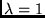
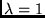
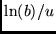
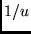
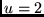
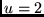

The multiple alignment is obtained by aligning each of the sequences to the model by the Viterbi algorithm. This has the advantage that it can be done for each sequence independently, and therefore it is very simple to add new sequences to the multiple alignment. Also, once the model is found, the multiple alignment is very fast and easy to produce.
The program to produce the basic alignment is called align2model. Calling it with no arguments gives a brief explanation. To align all the sequences in trna10.seq use the command:
align2model trna10 -i test.mod -db trna10.seqThis will put an intermediate form of the alignment in the file trna10.a2m. In this FASTA-compatible intermediate format deletions are shown as dashes (`-') and insertions (produced in the insert states of the model) are shown as lower case characters, while periods (`.') are used to fill in the sequences that did not have any insertions if a2mdots is set to 1, the default.
In case you only want to align a few sequences in a large file, you can specify the identifiers of these sequences on the command line. For instance
align2model trna2 -i test.mod -db trna10.seq -id TRNA1 -id TRNA9will only align the two specified sequences. The output (in trna2.a2m) would look like this:
>TRNA1 GGGGAUGUAGCUCAG-UGGUAGAGCGCA-UGCUUCGCAUGUAUGAGGCC CcG.GGUUCGAUCCCC--GGCAUCUCCA >TRNA9 CGGCACGUAGCGCAGCCUGG-UAGCGCACCGUCCUGGGGUUGCGGGGGUC G.GaGGUUCAAAUCCUCUCGUGCCGACCA
The Viterbi algorithm finds the single best path for the alignment -- that which has the highest probability. The SAM system can also find the single most likely path. Internally, this corresponds to using the EM algorithm to evaluate all possible paths, calculating the probability of each residue appear in each model state and the probability of use for each transition (the posterior probabilities). A second (Viterbi-style) dynamic programming is then performed on these probabilities to find the most likely path (see, for example, Holmes and Durbin in Recomb98).
SAM includes two flavors of posterior-decoded alignment. When adpstyle is 4, posteriors are calculated using a global (SW is 0) forward calculation. Then, the minimizing path through the transition and character emission posteriors is calculated using the specified SW mode.
When adpstyle is 5, posteriors for character emissions are calculated using the specified global or local SW mode. Then, the minimizing path for character emission posteriors only is calculated using a global dynamic programming mode.
These alignment methods are much slower than standard Viterbi alignment, and have not yet been implemented for reduced memory use. If the sequence is too long to perform this extensive alignment calculation, a warning messages printed and the Viterbi algorithms used.
To get a nice display of the alignment produced by align2model, you can use the prettyalign program, which has several display options. The program reads from a file like the one made in the example above:
prettyalign trna10.a2m > trna10.prettywhich would give you an alignment similar to the one shown in the Section 3
Prettyalign does not follow SAM's normal commandline format. To see an explanation of the various options, run the program with some invalid option (like prettyalign -h). Some of the most useful options are
align2model trna3 -i test.mod -db trna10.seq -id TRNA1 -id TRNA2 -id TRNA9 prettyalign trna3.a2m -l 50 > trna3.prettygives the following output
10 20 30 40 | | | | TRNA1 GGGGAUGUAGCUCAG-UGGUA.GAGCGCA-UGCUUCGCAUGUA TRNA2 GCGGCCGUCGUCUAGUCUGGAuUAGGACGCUGGCCUCCCAAGCC TRNA9 CGGCACGUAGCGCAGCCUGG-.UAGCGCACCGUCCUGGGGUUGC50 60 70 | | | TRNA1 UGAGGCCCcG.GGUUCGAUCCCC--GGCAUCUCCA TRNA2 AGCAAUCCcG.GGUUCGAAUCCCGGCGGCC--GCA TRNA9 GGGGGUCG.GaGGUUCAAAUCCUCUCGUGCCGACCA
The prettyalign program can compress long insertions to only the
initial segment of bases in the insertion plus digits representing the
total length of the insertion. For example, the sequence GacguacguG could be printed out as Ga8guG if 4 was the largest
number of insertions that was to be allowed (note that the character 8
is using up one of the positions). By default, insertions of up to
length ten thousand are fully printed. This can be changed with the
-m flag to prettyalign, which sets the maximum number of
insertions that are printed. If set to zero, no insertions are
printed, and no indication of the lack is given. If less than zero,
insertion characters are not printed, and that number of digits is
used to indicate the length of each insertion.
For example, the alignment at the end of Section 10.3.1 could alternatively be created using the command
prettyalign ftrain.mod -m 8 > ftrain2.prettyto produce the alignment:
10 20 30 40 50 | | | | | TRNA1 ........GGGGAUGUAGCUCAG-.UGG...U.AGAGCGCAUGCUUCGCAUGUAUGAGGCCCC TRNA2X gcg16aguGCGGCCGUCGUCUAGU.CUGgauU.AGGACGCUGGCCUCCCAAGCCAGCAAUCCC TRNA3X ccc.....GGCCCUGUGGC-UAGC.UGG...UcAAAGCGCCUGUCUAGUAAACAGGAGAUCCU TRNA4X ggg15ucaGGGCGAAUAGUGUCAG.CGG...G.AGCACACCAGACUUGCAAUCUGGUAG-GGA TRNA5X ........GCCGGGAUAGCUCAGU.UGG...U.AGAGCAGAGGACUGAAAAUCCUCGUGUCAC TRNA6 ........GGGGCCUUAGCUCAGC.UGG...G.AGAGCGCCUGCUUUGCACGCAGGAGGUCAG TRNA7 ........GGGCACAUGGCGCAGU.UGG...U.AGCGCGCUUCCCUUGCAAGGAAGAGGUCAU TRNA8 ........GGGCCCGUGGCCUAGU.CUGga.U.ACGGCACCGGCCUUCUAAGCCGGGGAUCGG TRNA9 c.......-GGCACGUAGCGCAGCcUGG...U.AGCGCACCGUCCUGGGGUUGCGGGGGUCGG TRNA10 ........UCCGUCGUAGUCUAGG.UGGu..U.AGGAUACUCGGCUUUCACCCGAGAGA-CCC60 70 | | TRNA1 GGGUUCGAUCCCCGGCAUCUCCA-......... TRNA2X GGGUUCGAAUCCCGGCGGCCGCAC-ggc10gca. TRNA3X GGGUUCGAAUCCCAGCGGGGCCUC-cagggg... TRNA4X GGGUUCGAGUCCCUCUUUGUCCAC-ca....... TRNA5X CAGUUCAAAUCUGGUUCCUGGCAU-ggu11gca. TRNA6 CGGU-CGA-CCCGCUAGGCUCCAC-ca....... TRNA7 CGGUUCGAUUCCGGUUGCGUCCA-......... TRNA8 GGGUUCAAAUCCCUCCGGGUCCG-......... TRNA9 AGGUUCAAAUCCUCUCGUGCCGAC-ca....... TRNA10 GGGUUCAAGUCCCGGCGACGGAAC-ca.......
The -I switch will create a compatible IG-style alignment file which
may be converted to other formats using the readseq package
included as a subdirectory of SAM. The -I option
automatically sets a high value for the insertion length parameter.
The -b switch generate a BLAST-style output, comparing the
first sequence in the alignment (by default) to each subsequent
sequence, and generating pairwise alignments with a middle line
highlighting identical residues and conservative substitutions. These
pairwise alignments do not include terminal inserts: These pairwise
alignments run from the first to last residue aligned by either
sequence. They do not include terminal inserts; they include insernal
inserts only if some sequence in the pairwise alignment is inserting
residues. The -R option can be used to specify a different
sequence to use as this reference sequence.
Consider a model of 100 nodes and a fragment of 25 that very closely matches some contiguous section of the model. Even though that section would align very well, the overall alignment of the fragment could be quite poor because of its need to use 75 delete states in the model. The problem here is that in addition to modeling conserved regions, the model also models the length of the conserved region.
SAM has two alignment options for dealing with fragments and one for domains. The first option allows a sequence to start matching the model at any location (rather than only the begin node) and end at any location (rather than only the end node). This will improve alignment for short sequences that match a segment of the model. This option can be turned on by setting the SW variable to one.
The second option is similar to Smith and Waterman method of sequence comparison, which will find the best alignment for any pair of subsequences within two sequences. The same can be done with models, allowing a submodel to match a subsequence. This type of dynamic programming can be specified by setting the SW variable to 2. When this is done, sequences can jump from the initial module (presumably a FIM, automatically added when auto_fim is set) into the match state of any module in the model, and can also jump out of the match state of any module within the model to the delete state of the next-to-last node. The first and next-to-last module are assumed to be FIMs, hence the rational is that a sequence will use the FIM for some period of time to consume characters that do not match the model, then the sequence will jump to the model node corresponding to the start of the fragment, use several model nodes, and then jump to the ending FIM to consume the rest of the sequence.
The probability of these jumps is set by the variables jump_in_prob and jump_out_prob, both of which have a default value of unity. That is, as in the sequence-to-sequence Smith and Waterman, there is no cost associated with jumping in and out of the model.
For domains, SW can be set to 3 to match part of a model to all of a sequence.
The file trna1frag.seq contains several sequences that contain part or all of TRNA1. The sequence include TRNA1 (72 bases), TRNA1Long (the complete tRNA with additional characters), Long (58 base segment of TRNA1), Medium (34 base segment), Short (6 base segment TRNA1), and AAMediumA, an embedding of Medium within several segments of As to bring it to 176 characters. Additionally, the file contains several (obviously) non-tRNAs of various lengths, all of whose IDs begin with the word `Not'.
When this file is aligned to the model test.mod, created above, the alignment of the sequence and fragments is reasonable, but the non-tRNAs still align the entire model and may even use internal insertion states. (As shall be seen in Section 10.2.3, the scoring of these fragments with the SW option off is not nearly so good as their alignments).
10 20 30 40 | | | | TRNA1 ........GGGGAUGUAGCUCAG-UGGU........AGAGCGCA-UGCUUCGCAUGUAUG TRNA1Long aaa11aaaGGGGAUGUAGCUCAG-UGGU........AGAGCGCA-UGCUUCGCAUGUAUG Short ........----------........------------- ShortReverse ........UCGUAC-------........------------- Medium ........G----------........-AGCGCA-UGCUUCGCAUGUAUG MediumReverse ........UUGGGC-CCCGGAGUAUGU........A-----CGCUUCGUACGCGAG AAMediumAA ........AAAAAAAAAAAAAAAAAAAAaaa48aaaAAAGAGCGCAUGCUUCGCAUGUAUG Long ........-----GCUCAG-UGGU........AGAGCGCA-UGCUUCGCAUGUAUG NotShort ........----------........--------AAAAAAAAA Not ........AAAAAAAAAAAAAAA--A........AAAAAAAAAAAAAAAAAAAAAAAAA NotLong ........AAAAAAAAAAAAAAAAAAAA........AAAAAAAAAAAAAAAAAAAAAAAAA NotExtraLong ........AAAAAAAAAAAAAAAAAAAA........AAAAAAAAAAAAAAAAAAAAAAAAA50 60 70 | | | TRNA1 AGGCCCcGGGUUCGAUCCCC--GGCAUCUCCA......... TRNA1Long AGGCCCcGGGUUCGAUCCCCGGCAUCUCCAAAAaaaaaaaa. Short ---.----------CAUGCU......... ShortReverse ---.-------------......... Medium AGGCCCcGGGUU-----------......... MediumReverse ---.-------------......... AAMediumAA AGGCCCcGGGUUAAAAAAAAAAAAAAAAAAAAAaaa50aaa. Long AGGCCCcGGGUUCGAUCCCCGGCAU----......... NotShort AAA--.-------------A......... Not AAAAAA.AAAAAAAAAAAAAAAAAAAAAAAAAA......... NotLong AAAAAA.AAAAAAAAAAAAAAAAAAAAAAAAAAaaa32aaa. NotExtraLong AAAAAA.AAAAAAAAAAAAAAAAAAAAAAAAAAaa361aaa.
Alignment with the SW option set to 1 is much the same (again, scoring will be improved), though the alignment procedure has managed to better isolate the AAMediumAA sequence's tRNA core, modeled by match states, from its prefix and postfix, modeling by internal insertion nodes.
10 20 30 40 | | | | TRNA1 ........GGGGAUGUAGCUCAG-UGGU........A....GAGCGCA-UGCUUCGCAUG TRNA1Long aaa11aaaGGGGAUGUAGCUCAG-UGGU........A....GAGCGCA-UGCUUCGCAUG Short ........----------........-....--------CAUG ShortReverse ........UCGUAC-------........-....---------- Medium ........----------........-....GAGCGCA-UGCUUCGCAUG MediumReverse ........--------UUGGG........CcccgGAGUAUGUACGCUUCGUACG AAMediumAA ........AAAAAAAAAAAAAAAAAAAAaaa48aaaA....AAGAGCGCAUGCUUCGCAUG Long ........-----GCUCAG-UGGU........A....GAGCGCA-UGCUUCGCAUG NotShort ........----------........-....-------AAAAAA Not ........--AAAAAAAAAAAAAAAA........A....AAAAAAAAAAAAAAAAAAAA NotLong ........AAAAAAAAAAAAAAAAAAAA........A....AAAAAAAAAAAAAAAAAAAA NotExtraLong ........AAAAAAAAAAAAAAAAAAAA........A....AAAAAAAAAAAAAAAAAAAA50 60 70 | | | TRNA1 UAUGAGGCCCcGGGUUCGAUCCCCGGCAUCUCCA--......... TRNA1Long UAUGAGGCCCcGGGUUCGAUCCCCGGCAUCUCCAAAAaaaaaaaa. Short CU----.-------------......... ShortReverse -----.-------------......... Medium UAUGAGGCCCcGGGUU-----------......... MediumReverse CGAG---.-------------......... AAMediumAA UAUGAGGCCCcGGGUUAAAAAAAAAAAAAAAAAAAAAaaa50aaa. Long UAUGAGGCCCcGGGUUCGAUCCCCGGCAU----......... NotShort AAAAAAA--.-------------......... Not AAAAAAAAAA.AAAAAAAAAAAAAAAAAAAAAAAAAA......... NotLong AAAAAAAAAA.AAAAAAAAAAAAAAAAAAAAAAAAAAaaa32aaa. NotExtraLong AAAAAAAAAA.AAAAAAAAAAAAAAAAAAAAAAAAAAaa361aaa.
When alignment is performed using the SW option set to 2, only the core tRNA segments are aligned: the non-tRNAs, as well as the prefix and postfix of AAMediumAA are aligned to the FIMs that have been automatically added to the model. The one problem is that the Short sequence has made some use of the end FIM because it is not long enough to make a really significant hit to the model's internal nodes.
10 20 30 40 50 | | | | | TRNA1 ........GGGGAUGUAGCUCAG-UGGUAGAGCGCA-UGCUUCGCAUGUAUGAGGCCCcG TRNA1Long aaa11aaaGGGGAUGUAGCUCAG-UGGUAGAGCGCA-UGCUUCGCAUGUAUGAGGCCCcG Short ........-------------------CAUGC-----.- ShortReverse u.......---CGUA---------------------.- Medium ........-----------GAGCGCA-UGCUUCGCAUGUAUGAGGCCC.C MediumReverse uug20uac----------------GCUUCGUACGCGAG---.- AAMediumAA aaa68aaa----------AAAGAGCGCAUGCUUCGCAUGUAUGAGGCCC.C Long ........-----GCUCAG-UGGUAGAGCGCA-UGCUUCGCAUGUAUGAGGCCCcG NotShort a.......--------------------------.- Not a.......--------------------------.- NotLong a.......--------------------------.- NotExtraLong a.......--------------------------.-60 70 | | TRNA1 GGUUCGAUCCCCGGCAUCUCCA--......... TRNA1Long GGUUCGAUCCCCGGCAUCUCCA--aaa11aaa. Short -------------u........ ShortReverse -------------c........ Medium GGGU-----------u........ MediumReverse -------------......... AAMediumAA GGGUUAAA---------aaa68aaa. Long GGUUCGAUCCCCGGC-----au....... NotShort ---AAA---------aaa9aaaa. Not ---AAA---------aaa69aaa. NotLong ---AAA---------aa105aaa. NotExtraLong ---AAA---------aa434aaa.
A different alignment is produced when SW is set to 2 (fully local) and adpstyle is set to 4 (posterior-decoded alignment with transitions). As can be seen in the example below, this option does not neatly cut the sequences to their matching positions, but may produce a better core alignment.
10 20 30 40 50 | | | | | TRNA1 ........GGGGAUGUAGCUCAG-UGGUAGAGCGCA-UGCUUCGCAUGUAUGAGGCCCcG TRNA1Long aaa11aaaGGGGAUGUAGCUCAG-UGGUAGAGCGCA-UGCUUCGCAUGUAUGAGGCCCcG Short ca......--------------------------.- ShortReverse uc......---------GUA---------------.- Medium ........-----------GAGCGCA-UGCUUCGCAUGUAUGAGGCCC.C MediumReverse uug.....GGCCCCGG---AGUAUGUA-----CGCUUCGUACGCG----.- AAMediumAA aaa64aaa--------AAAAAAAGAGCGCAUGCUUCGCAUGUAUGAGGCCCcG Long ........-----GCUCAG-UGGUAGAGCGCA-UGCUUCGCAUGUAUGAGGCCCcG NotShort aa......-----------AAAAAAA------------.- Not aaa22aaa-------------AAAAAAAAAAAAAAAAAAAAAAAAAA.A NotLong aaa54aaa-------------------A------.- NotExtraLong aa217aaa-------------------A------.-60 70 | | TRNA1 GGUUCGAUCCCC--GGCAUCUCCA......... TRNA1Long GGUUCGAUCCCCGGCAUCUCCAAAAaaaaaaaa. Short -----------UGCU......... ShortReverse -------------c........ Medium GGGU-----------u........ MediumReverse -------------ag....... AAMediumAA GGUUAAAAAAAAA------aaa62aaa. Long GGUUCGAUCCCCGGCA-----u........ NotShort -------------aaaa..... Not -------------aaa24aaa. NotLong -------------aaa54aaa. NotExtraLong -------------aa220aaa.
As well as when SW is set to 2 (fully local) and adpstyle is set to 5 (posterior-decoded alignment solely on character emission).
10 20 30 40 50 | | | | | TRNA1 g.......-GGGAUGUAGCUCAG-UGGUAGAGCGCA-UGCUUCGCAUGUAUGAGGCCCcG TRNA1Long aaa12aag-GGGAUGUAGCUCAG-UGGUAGAGCGCA-UGCUUCGCAUGUAUGAGGCCCcG Short ca......--------------------------.- ShortReverse uc......--------------------------.- Medium g.......-----------AGCGCA-UGCUUCGCAUGUAUGAGGCCC.C MediumReverse uug14agu--------------------------.- AAMediumAA aaa69aaa-----------AAGAGCGCAUGCUUCGCAUGUAUGAGGCCCcG Long ........-----GCUCAG-UGGUAGAGCGCA-UGCUUCGCAUGUAUGAGGCCCcG NotShort aaaaa...--------------------------.- Not aaa28aaa--------------------------.- NotLong aaa42aaa--------------------------.- NotExtraLong aa167aaa--------------------------.-60 70 | | TRNA1 GGUUCGAUCCCCGGCAUCUCC--a........ TRNA1Long GGUUCGAUCCCCGGCAUCUCCA--aaa11aaa. Short -------------ugcu..... ShortReverse -------------guac..... Medium GG------------guu...... MediumReverse -------------aug20gag. AAMediumAA GGUUAAAA---------aaa67aaa. Long GGUUCGAUCCCCGG------cau...... NotShort -------------aaaaaaaa. Not -------------aaa45aaa. NotLong -------------aaa67aaa. NotExtraLong -------------aa271aaa.
Here is the posterior-decoded (adpstyle 4) global alignment (SW is 0).
10 20 | | TRNA1 ........GGGG........AUGUA........GCUC........AG-U........GGU. TRNA1Long aaa11aaaGGGG........AUGUA........GCUC........AG-U........GGU. Short ........--........---........--........--........--. ShortReverse ........UCG-........---........--........--........-U. Medium ........G--........---........--........--........--. MediumReverse ........UUGG........GC-C........CCGG........AGUA........UGU. AAMediumAA ........AAAA........AAAAAaaa25aaaAAAA........AAAAaaa23aaaAAA. Long ........G--........---........-CUC........AG-U........GGU. NotShort ........--........---........--........--........--. Not ........AAAA........AAAAA........AAAA........AAA-........--. NotLong ........AAAA........AAAAA........AAAA........AAAA........AAAa NotExtraLong ........AAAAaaa43aaaAAAAA........AAAAaaa35aaaAAAA........AAAa30 40 50 | | | TRNA1 .......AGAGCGCA-UGCUU........CGCAUGUAU.......GAGGCCCc....... TRNA1Long .......AGAGCGCA-UGCUU........CGCAUGUAU.......GAGGCCCc....... Short .......--------........-CAUGCU-.......----........ ShortReverse .......A-------........-----.......---C........ Medium .......-AGCGCA-UGCUU........CGCAUGUAU.......GAGGCCC........ MediumReverse .......A-----CGCUU........CGUACGCGA.......G---........ AAMediumAA .......AAAGAGCGCAUGCUU........CGCAUGUAU.......GAGGCCCc....... Long .......AGAGCGCA-UGCUU........CGCAUGUAU.......GAGGCCCc....... NotShort .......AAAAAA-----........-AAA--.......----........ Not .......AAAAAAAAAAAAAAA........AAAAAAAAA.......AAAAAAA........ NotLong aa12aaaAAAAAAAAAAAAAAA........AAAAAAAAAaaaaaaaAAAAAAAaaa13aaa NotExtraLong aa51aaaAAAAAAAAAAAAAAAaaa71aaaAAAAAAAAA.......AAAAAAA........
60 70 | | TRNA1 GGGUUCGAUCCCC........--GGCAUCUC........CA......... TRNA1Long GGGUUCGAUCCCC........GGCAUCUCCAAaaaaaaaaAA......... Short -------........------........-......... ShortReverse -------........------........-......... Medium CGGGUU----........------........-......... MediumReverse -------........------........-......... AAMediumAA GGGUUAAAAAAAAaaa24aaaAAAAAAAAAAA........AAaaa26aaa. Long GGGUUCGAUCCCC........GGCAU---........-......... NotShort ---AAA--........------........-A......... Not AAAAAAAAAAAAA........AAAAAAAAAAA........AA......... NotLong AAAAAAAAAAAAA........AAAAAAAAAAA........AA......... NotExtraLong AAAAAAAAAAAAA........AAAAAAAAAAA........AAaa161aaa.
Here is the posterior-decoded (adpstyle 5) global alignment (SW is 0).
10 | TRNA1 ........G........G...G..G........AUGUA........G...CU.C....... TRNA1Long aaa11aaaG........G...G..G........AUGUA........G...CU.C....... Short ........C........-...-..-........---........-...-.-....... ShortReverse ........U........C...G..-........---........-...-.-....... Medium ........G........-...-..-........---........-...-.-....... MediumReverse ........U........U...G..G........GCC-........C...CG.G....... AAMediumAA ........A........A...A..Aaaa17aaa---aaa10aaa-...-a-aaa12aa Long ........G........-...-..-........---........-...CU.C....... NotShort ........A........-...-..-........---........-...-.-....... Not ........A........A...A..A........AAAAA........A...AA.A....... NotLong ........A........A...A..A........AAAAA........A...AA.A....... NotExtraLong ........Aaaa20aaa-aaa-aa-aaa19aaa---aaa19aaa-aaa-.-aaa25aa20 30 | | TRNA1 .AG-U.......G..G.U........AGAGCGCA-........-UGC........UU.... TRNA1Long .AG-U.......G..G.U........AGAGCGCA-........-UGC........UU.... Short .--.......-..-.-........----A-........--........-.... ShortReverse .--.......-..-.U........----A-........--........-.... Medium .--.......-..-.-........-AGCGCA-........-UGC........UU.... MediumReverse .AGUA.......U..G.U........A----........-CGC........UU.... AAMediumAA a--aaaaa..-a.-a-aaa17aaaAAAGAGCGC........AUGC........UU.... Long .AG-U.......G..G.U........AGAGCGCA-........-UGC........UU.... NotShort .--.......-..-.-........-AAAAA--........--........-.... Not .AAAA.......A..A.A........AAAAAAAA-........--A........AA.... NotLong .AAAA.......A..A.Aaaa11aaaAAAAAAAAAa.......AAAA........AA.... NotExtraLong a--aaaaaaa-aa-a-aaa44aaa-----aaa23aaa--aaa17aaa-aaa4
40 50 60 | | | TRNA1 ....CGCAUGU........AU.......GAGGCCCc.......GGGU........UCGAU. TRNA1Long ....CGCAUGU........AU.......GAGGCCCc.......GGGU........UCGAU. Short ....----........-.......----........--........---. ShortReverse ....----........-.......----........--........---. Medium ....CGCAUGU........AU.......GAGGCCC........CGGG........U--. MediumReverse ....CGUACGC........GA.......----........--........---. AAMediumAA ....CGCAUGU........AU.......GAGGCCCc.......GGGU........UAAAAa Long ....CGCAUGU........AU.......GAGGCCCc.......GGGU........UCGAU. NotShort ....--AA-........-.......-A---........--........-AA-. Not ....AAAAAAA........AA.......AAAAAAA........AAAA........AAAAA. NotLong ....AAAAAAA........AAaaaaaaaAAAAAAAaaa13aaaAAAA........AAAAA. NotExtraLong 1aaa----aaa23aaa-.......----........--aaa24aaa---.
70 | TRNA1 .......C.CC.C........-....-GGCAUCUC........CA......... TRNA1Long .......C.CC.C........GG....CAUCUCCAAaaaaaaaaAA......... Short .......-.-.-........-....----UG........CU......... ShortReverse .......-.-.-........-....-----........-C......... Medium .......-.-.-........-....-----........-U......... MediumReverse .......-.-.-........-....-----........-G......... AAMediumAA aa15aaa-a-a-aaa15aaa-aaaa-----........-aaa31aaa. Long .......C.CC.C........GG....CAU---........-......... NotShort .......-.-.-........-....-----........AA......... Not .......A.AA.A........AA....AAAAAAAAA........AA......... NotLong .......A.AA.A........AA....AAAAAAAAA........AA......... NotExtraLong .......-.-.-........-....-----........-aa164aaa.
Any sequence can be compared to a model by calculating the probability that the sequence was generated by that model. Taking the negative (natural) logarithm of this probability gives the NLL score. For sequences of equal length the NLL scores measures how `far' they are from the model, and it can be used to select sequences that are from the same family. However, the NLL score has a strong dependence on sequence length and model length. Hmmscore provides several less biased means of scoring by reporting NLL scores as the difference between a null model and trained model NLL score (a log-odds score, as used in HMMER).
Null model scoring is discussed in more detail in the Barrett,
Karplus, and Hughey paper mentioned in the introduction and available
from the SAM WWW page.
(http://www.cse.ucsc.edu/research/compbio/papers/nullmod/nullmod.html).
The program hmmscore can find NLL and NLLNULL (log-odds) scores. E-values can be calculated for the reverse sequence null model. The most common operation is to calculate NLLNULL scores for a large number of sequences. This can be done by supplying the name of the model file and one or more sequence database files on the command line, optionally followed by hmmscore parameter specifications. For instance, for the example files described earlier the NLL scores are found the following way
hmmscore test -insert test.mod -db trna10.seq -sw 2
Produces the file test.dist already displayed:
% SAM: hmmscore v3.3.1 (December 20, 2001) compiled 12/27/01_15:14:20 % (c) 1992-2001 Regents of the University of California, Santa Cruz % % Sequence Alignment and Modeling Software System % http://www.cse.ucsc.edu/research/compbio/sam.html % % --------- Citations (SAM, SAM-T99, HMMs) ---------- % R. Hughey, A. Krogh, Hidden Markov models for sequence analysis: % Extension and analysis of the basic method, CABIOS 12:95-107, 1996. % K. Karplus, C. Barrett, R. Hughey, Hidden Markov models for detecting % remote protein homologies, Bioinformatics 14(10):846-856, 1998. % A. Krogh et al., Hidden Markov models in computational biology: % Applications to protein modeling, JMB 235:1501-1531, Feb 1994. % ----------------------------------- % test Host: perch Thu Dec 27 16:02:54 2001 % rph Dir: /projects/kestrel/rph/sam32/SAMBUILD/perch/demos % ----------------------------------- % Inserted Files: test.mod % Database Files: /projects/kestrel/rph/sam32/demos/trna10.seq % % Subsequence-submodel (local) (SW = 2) % Simple scores adjusted by ln(seq len) (adjust_score = 2) % Track 0 FIMs added (geometric mean of match probabilities (6)) % Single Track Model: test.mod % DP Method: forward all-paths (dpstyle = 0) % 10 sequences, 747 residues, 78 nodes, 0.03 seconds % % Sequence scores selected: All (select_score=8) % % Simple: NLL-NULL using FIM probabilities % Reverse: NLL-NULL for the reverse sequence NULL model % Calculated when Simple < simple_threshold (0.00) % E-value on N (=10) sequences: % N / (1 + exp(-(lambda(=1.0000) * Reverse)**tau(=1.0000))) % Calculated when Simple < simple_threshold (0.00) % Rescale E-values or use -dbsize for multiple scoring runs. % WARNING: E-VALUES ARE NOT CALIBRATED! % Scores sorted by E-value, best first % % Sequence ID Length Simple Reverse E-value X count TRNA8 75 -41.85 -32.87 5.32e-14 TRNA10 76 -40.26 -32.34 9.02e-14 TRNA2 76 -38.68 -31.45 2.20e-13 TRNA7 73 -37.12 -28.90 2.82e-12 TRNA1 72 -35.84 -28.51 4.14e-12 TRNA4 75 -36.00 -28.12 6.14e-12 TRNA9 77 -33.86 -26.57 2.88e-11 TRNA3 76 -34.30 -25.57 7.85e-11 TRNA5 73 -34.73 -25.47 8.67e-11 TRNA6 74 -35.14 -25.39 9.37e-11
As discussed in Section 3.4, the score file contains six columns. The first is the sequence identifier, followed by sequence length, the `NLL-NULL' score using a simple null model. The next score column is either the raw NLL score if only the simple null model is calculated (the default), or the complex or reverse sequence null model's `NLL-NULL' if one of the more time-consuming null models is used, as discussed below. If E-values are calculated, they are listed after the two score columns. Last, the number of all-character wildcards in each sequence is listed for those that have any wildcards.
By default, hmmscore uses the EM scoring method, just as is used to train a model. If desired, scores can be based on exact alignment to the model, multiplying the probabilities along the best path rather than all paths. This method, which corresponds to the forward half of align2model, can be turned on by setting viterbi to 1. Viterbi scoring is appropriate for finding out how good a sequence's best alignment to a model is.
The E-value computation is based on a simple, but somewhat
unrealistic, assumption that the scores for the sequence and the
reversed-sequence are independent draws from an extreme-value (Gumbel)
distribution:
The only parameter that needs to be estimated is the natural scaling
 . Since we use natural logs in computing our probabilities,
we set , which seems to be correct experimentally. Thus we
compute our E-values with no parameter fitting at all--it is based
purely on theoretical considerations.
. Since we use natural logs in computing our probabilities,
we set , which seems to be correct experimentally. Thus we
compute our E-values with no parameter fitting at all--it is based
purely on theoretical considerations.
The calibrate option of hmmscore can be used to calibrate the lambda values for the E-value calculation. Once a model library has been created, it can be specified to hmmscore using the model_library directive (or modlib alias). See Section 10.2.9.
The hmmscore program can also be used to select sequences according to various criteria.
Plots of the NLL-NULL scores can be used to visually look for a break between significant and insignificant matches. See Section 10.10.
SAM includes several possibilities for NULL model scoring. The null model can be a simple probability distribution, effectively a model with a single FIM. The null model can be any model specified in SAM format, with the key word `NULLMODEL' (rather than, for example, `MODEL' or `REGULARIZER'), or the first model in a file specified with the nullmodel_file parameter. The null model can be the reversed HMM, or equivalently, the score of the reversed sequence through the original HMM.
To report differences between the model NLL score and the simple null model score (possibly modified by FIM_method_score, see below), set the subtract_null variable to 1. To report differences between two models (for example, one trained on positive family examples and one trained on negative examples of a family), set subtract_null to 3. To report differences between the score of the sequence and the score of the reversed sequence, which provides an automatic adjustment for compositional bias and allows the simple calculation of E-values, set subtract_null to 4 (the default). The complex null model (previously subtract_null 2) is no longer supported, and reverts to the simple null model.
The simple null model score (subtract_null=1) is actually
calculated in all cases. If the other null model calculations were to
be calculated all the time, it would double the running time of hmmscore. The simple_threshold variable can be used to
control when the more time consuming score should be calculated: the
it will only be calculated when the simple null model score is less
than simple_threshold. Sequences for which the more time
consuming null model was not calculated will have the score 10000 in
the second score column of the distance file. The default value of
simple_threshold is 0; a setting of  is a reasonable
setting to further reduce the amount of calculation performed without
losing too many E-values.
is a reasonable
setting to further reduce the amount of calculation performed without
losing too many E-values.
A related varable, viterbi_threshold can be used to perform Viterbi simple null model score filtering before completing any EM-style scoring. Because EM-style scoring is 2-5 times slower than Viterbi scoring, this can result in quite a runtime savings. Typically, it should be set to the same or a less negative value than simple_threshold.
Our current favorites (and the default) are the simple null model (geometric average) mixed with the reverse sequence null model for well-scoring sequences. Because the difference between the sequence and reverse sequence scores automatically adjusts for model and sequence length, SAM is able to add E-values to the score file in this case. The command
hmmscore testrev -i test.mod -db trna10.seq -subtract_null 4 -sw 2produces a score file that includes both simple and reverse-sequence null model scores:
% SAM: hmmscore v3.3.1 (December 20, 2001) compiled 12/27/01_15:14:20 % (c) 1992-2001 Regents of the University of California, Santa Cruz % % Sequence Alignment and Modeling Software System % http://www.cse.ucsc.edu/research/compbio/sam.html % % --------- Citations (SAM, SAM-T99, HMMs) ---------- % R. Hughey, A. Krogh, Hidden Markov models for sequence analysis: % Extension and analysis of the basic method, CABIOS 12:95-107, 1996. % K. Karplus, C. Barrett, R. Hughey, Hidden Markov models for detecting % remote protein homologies, Bioinformatics 14(10):846-856, 1998. % A. Krogh et al., Hidden Markov models in computational biology: % Applications to protein modeling, JMB 235:1501-1531, Feb 1994. % ----------------------------------- % testrev Host: perch Thu Dec 27 16:02:57 2001 % rph Dir: /projects/kestrel/rph/sam32/SAMBUILD/perch/demos % ----------------------------------- % Inserted Files: test.mod % Database Files: /projects/kestrel/rph/sam32/demos/trna10.seq % % Subsequence-submodel (local) (SW = 2) % Simple scores adjusted by ln(seq len) (adjust_score = 2) % Track 0 FIMs added (geometric mean of match probabilities (6)) % Single Track Model: test.mod % DP Method: forward all-paths (dpstyle = 0) % 10 sequences, 747 residues, 78 nodes, 0.03 seconds % % Sequence scores selected: All (select_score=8) % % Simple: NLL-NULL using FIM probabilities % Reverse: NLL-NULL for the reverse sequence NULL model % Calculated when Simple < simple_threshold (0.00) % E-value on N (=10) sequences: % N / (1 + exp(-(lambda(=1.0000) * Reverse)**tau(=1.0000))) % Calculated when Simple < simple_threshold (0.00) % Rescale E-values or use -dbsize for multiple scoring runs. % WARNING: E-VALUES ARE NOT CALIBRATED! % Scores sorted by E-value, best first % % Sequence ID Length Simple Reverse E-value X count TRNA8 75 -41.85 -32.87 5.32e-14 TRNA10 76 -40.26 -32.34 9.02e-14 TRNA2 76 -38.68 -31.45 2.20e-13 TRNA7 73 -37.12 -28.90 2.82e-12 TRNA1 72 -35.84 -28.51 4.14e-12 TRNA4 75 -36.00 -28.12 6.14e-12 TRNA9 77 -33.86 -26.57 2.88e-11 TRNA3 76 -34.30 -25.57 7.85e-11 TRNA5 73 -34.73 -25.47 8.67e-11 TRNA6 74 -35.14 -25.39 9.37e-11
The NLL-NULL scores, especially for the simple null model, are most useful when the model has had free insertion modules (Section 8.5) added to it. Then, the null model and the FIMs will cancel out, and the score will be based primarily on the section of the sequence that matches the region that has been modeled. By default, hmmscore automatically adds FIMs to any model that does not already contain them when SW scoring is used. To change this, if for example you want to ensure that entire sequences are modeled, rather than simply subregions, change auto_fim from its default value of 1 to 0. The auto_fim variable has no effect when a user-specified null model is used.
Since NLL-NULL scores are negative logs, the lower the better. In the case above, all of the tRNAs have been positively identified as tRNAs. (Not surprising as they were all in the training set!)
New to Version 1.2 is the ability to adjust the null model scoring. Since this determines the probability that a sequence was randomly generated according to the residue insertion probabilities, these values should reflect knowledge of the problem domain. Five possibilities are offered. The flat distribution or the background distribution of amino acids over all proteins can be used. Both of these distributions are invariant over all families, and are thus a simplistic assumption. The distribution can also be the distribution of the residues in the training set or the average residue distribution over all columns (match states) modeled by the HMM. The advantage of these two, especially the latter, is the ability to partially correct for compositional bias in the sequences. Lastly, the insertion probabilities can reflect the residue distribution of the sequence currently being scored. This is the most pessimistic null model, as it demands not that the HMM model the sequence better than fixed background frequencies, but that is model the sequence significantly better than frequencies exactly matching the sequence's composition.
So the options available for FIM_method_score are
The default setting, for experimental and statistical reasons, is the geometric average of the model match states (6). The insertion tables can be similarly modified with Insert_method_score, the default of which is no change (0).
As with the training methods, if the method value is negative instead, the FIMs and insert tables will only be modified if there is no initial model read in (an unlikely occurrence for hmmscore).
The FIM scoring methods are only applied to the primary track of multitrack models. Other tracks never have their insert or FIM tables changed, and if FIMs are added to the model either the character table of the generic node is used (when present) or the geometric match state average (when there is no generic node).
The FIM scoring methods are not applied to the user's null model.
A more detailed discussion of these issues can be found in (Barrett, Hughey & Karplus 1996), mentioned in the Introduction.
Sequences can be selected by hmmscore and placed in a
.sel file.
A selection mode is chosen by setting select_seq. If 0, no sequences are selected; if 1, sequences are selected according to their simple null model scores and NLLNull; if 2, sequences are selected according to their column 2 score (user or reverse sequence null, or raw NLL score if subtract_null is 0 or 1) and NLLcomplex; if 4, sequences are selected according to their E-value and Emax; if 8, all sequences are selected. Selection criteria can be combined: 3 requires sequences to score better than NLLnull with the simple null model and NLLcomplex with the complex (user or reverse sequence) null model. Negative numbers indicate that sequences that do not pass the corresponding positive test should be selected.
The following will place labeled copies of all sequences scoring lower than -35 with the reverse sequence null model into test.sel.
hmmscore tests -i test.mod -db trna10.seq -select_seq 2 -NLLcomplex -35 -sw 2
Selected sequences are written out in the same order they are encountered in the database files, which may be different from the order they are listed in the score file if scores are sorted. The sortseq program can be used to write out the sequences in the same order they are listed in the score file. See Section 10.11.7. The sort variable controls whether sequence scores are unsorted (0); sorted by E-value (4), column 2 of the distance file (2), or column 1 of the distance file (1). Sequences in the select file will be selected by other than the sorting criteria unless sort and select_seq are set to corresponding values.
The select_score variable can be set in the same manner as select_seq, in which case only scores of those sequences that match the specified criteria will be recorded in the distance file. This is particularly useful for database searches in which only sequence IDs are of interest.
The select_align variable can be used in a similar way to cause selected sequence alignments to be placed in the runname.a2m file. Note that all selection variables use the same NLLnull, NLLcomplex, and Emax thresholds, though different combinations of the thresholds can be used by the different parameters.
If the binary expansion of the many_files variable includes a '2' (e.g., 2, 3, 6, 7), the score information is sent to standard output. If the binary expansion of the many_files variable includes a '4' (e.g., 4, 5, 6, 7), the multiple domain score information is sent to standard output. (See Section 10.2.4.) If the binary expansion of the many_files variable includes a '1' (e.g., 1, 3, 5, 7), buildmodel will create multiple files. See first two options enable UNIX pipe processing, such as:
hmmscore tests -i test.mod -db trna10.seq | awk '$1 !~ % { print $5 "\t" $1}'
to print a file with an evalue and an identifier on each line after
removing the comment lines. If both options are in force (e.g., 6,
7), both the multiple domain and the simple scoring values will be
sent to standard output in an undefined order.
In a terminal window, you will also see
hmmscore's standard error output of various diagnostic messages.
Consider a model of 100 nodes and a fragment of 25 that very closely matches some contiguous section of the model. Even though that section would score very well, the overall score of the fragment could be quite poor because of its need to use 75 delete states in the model. The problem here is that in addition to modeling conserved regions, the model also models the length of the conserved region.
SAM has two scoring options for dealing with fragments. The first option allows a sequence to start matching the model at any location (rather than only the begin node) and end at any location (rather than only the end node). This will improve scoring for short sequences that match a segment of the model. This option can be turned on by setting hmmscore's SW variable to one.
The second option is similar to Smith and Waterman method of sequence comparison, which will find the best score for any pair of subsequences within two sequences. The same can be done with models, allowing a submodel to match a subsequence. In hmmscore, this type of scoring can be specified by setting the SW variable to 2. When this is done, sequences can jump from the initial module (presumably a FIM) into the delete state of any module in the model, and can also jump out of the delete state of any module within the model to the delete state of the next-to-last node. The first and next-to-last module are assumed to be FIMs, hence the rational is that a sequence will use the FIM for some period of time to consume characters that do not match the model, then the sequence will jump to the model node corresponding to the start of the fragment, use several model nodes, and then jump to the ending FIM to consume the rest of the sequence.
The probability of these jumps is set by the variables jump_in_prob and jump_out_prob, both of which have a default value of unity. That is, as in the sequence-to-sequence Smith and Waterman, there is no cost associated with jumping in and out of the model.
The file trna1frag.seq contains several sequences that contain part or all of TRNA1. The sequence include TRNA1 (72 bases, TRNA1Long (the complete tRNA with additional characters), Long (58 base segment) TRNA), Medium (34 base segment), Short (6 base segment TRNA1), and AAMediumA, an embedding of Medium within several segments of As to bring it to 176 characters. Additionally, the file contains several (obviously) non-tRNAs of various lengths, all of whose IDs begin with the word `Not'.
When this file is scored using hmmscore with SW set to 0 for global alignment, the scores of the full sequence and the long fragment place them clearly as tRNAs. However, the score of the short and medium fragments are greatly penalized by the large number of delete states they must use.
TRNA1 72 -36.70 -51.91 3.43e-22 :the original sequence TRNA1Long 94 -17.83 -40.84 2.21e-17 :TRNA1 with flanking As Long 58 -11.32 -27.71 1.11e-11 :A long partial segment from TRNA1 Medium 34 19.38 1000000.00 1.20e+01 :A medium-length segment from TRNA1 Not 73 26.73 1000000.00 1.20e+01 :A string of As of equal length to TRNA1 MediumReverse 34 30.84 1000000.00 1.20e+01 :The reversal of medium NotLong 109 42.35 1000000.00 1.20e+01 :A string of As longer than TRNA1 NotShort 13 44.27 1000000.00 1.20e+01 :A short segment that is not TRNA1 ShortReverse 6 52.36 1000000.00 1.20e+01 :A short reverse segment from TRNA1 Short 6 52.95 1000000.00 1.20e+01 :A short segment from TRNA1 AAMediumAA 176 63.45 1000000.00 1.20e+01 :The medium segment with long flanking A regions NotExtraLong 438 238.28 1000000.00 1.20e+01 :A string of As much longer than TRNA1(Several of the sequences had simple null model scores worse than simple_threshold, so their reverse null model scores were not calculated.)
When scoring is performed using the SW option set to 1, the following score file is generated, which places even the short fragment in the possible tRNA range.
TRNA1 72 -33.84 -46.23 1.00e-19 :the original sequence TRNA1Long 94 -13.46 -39.05 1.32e-16 :TRNA1 with flanking As Long 58 -20.85 -28.16 7.11e-12 :A long partial segment from TRNA1 Medium 34 -9.06 -14.81 4.43e-06 :A medium-length segment from TRNA1 ShortReverse 6 1.32 1000000.00 1.20e+01 :A short reverse segment from TRNA1 Short 6 1.86 1000000.00 1.20e+01 :A short segment from TRNA1 NotShort 13 2.71 1000000.00 1.20e+01 :A short segment that is not TRNA1 MediumReverse 34 5.76 1000000.00 1.20e+01 :The reversal of medium Not 73 25.91 1000000.00 1.20e+01 :A string of As of equal length to TRNA1 NotLong 109 45.06 1000000.00 1.20e+01 :A string of As longer than TRNA1 AAMediumAA 176 68.06 1000000.00 1.20e+01 :The medium segment with long flanking A regions NotExtraLong 438 244.05 1000000.00 1.20e+01 :A string of As much longer than TRNA1
When scoring is performed using the SW option set to 2, the following score file is generated, which also picks up the sequence AAMediumAA, which is a segment of a tRNA embedded within a longer sequence.
TRNA1Long 94 -35.95 -28.53 4.87e-12 :TRNA1 with flanking As TRNA1 72 -35.84 -28.51 4.97e-12 :the original sequence Long 58 -28.00 -20.64 1.30e-08 :A long partial segment from TRNA1 AAMediumAA 176 -18.11 -10.56 3.11e-04 :The medium segment with long flanking A regions Medium 34 -15.48 -8.62 2.16e-03 :A medium-length segment from TRNA1 ShortReverse 6 -5.76 -0.09 5.74e+00 :A short reverse segment from TRNA1 NotShort 13 -6.70 -0.00 6.00e+00 :A short segment that is not TRNA1 NotLong 109 -7.38 -0.00 6.00e+00 :A string of As longer than TRNA1 NotExtraLong 438 -7.43 0.00 6.00e+00 :A string of As much longer than TRNA1 Not 73 -7.34 0.00 6.00e+00 :A string of As of equal length to TRNA1 Short 6 -5.67 0.09 6.26e+00 :A short segment from TRNA1 MediumReverse 34 -6.86 8.62 1.20e+01 :The reversal of medium
The unclear separation in this file between the best non-tRNA and the worst tRNA segment is because local alignment allows sequences to use only the parts of the model that improve its score. Thus, a long random sequence will have a better score than a shorter random sequence. Better scores are gained by using the more expensive (to calculate) reverse sequence null model. Setting subtract_null to 4 will differentiate the tRNAs, excepting the 6-nucleotide sequence, from the non-tRNAs. (In this contrived example, the long sequences are composed of the single letter A, and thus the sequence and the reverse sequence score the same going through the HMM.)
TRNA1Long 94 -35.95 -28.53 4.87e-12 :TRNA1 with flanking As TRNA1 72 -35.84 -28.51 4.97e-12 :the original sequence Long 58 -28.00 -20.64 1.30e-08 :A long partial segment from TRNA1 AAMediumAA 176 -18.11 -10.56 3.11e-04 :The medium segment with long flanking A regions Medium 34 -15.48 -8.62 2.16e-03 :A medium-length segment from TRNA1 ShortReverse 6 -5.76 -0.09 5.74e+00 :A short reverse segment from TRNA1 NotShort 13 -6.70 -0.00 6.00e+00 :A short segment that is not TRNA1 NotLong 109 -7.38 -0.00 6.00e+00 :A string of As longer than TRNA1 NotExtraLong 438 -7.43 0.00 6.00e+00 :A string of As much longer than TRNA1 Not 73 -7.34 0.00 6.00e+00 :A string of As of equal length to TRNA1 Short 6 -5.67 0.09 6.26e+00 :A short segment from TRNA1 MediumReverse 34 -6.86 8.62 1.20e+01 :The reversal of medium
Significance levels for the simple null model, especially for the second option, change greatly. In the first option, because sequences can start at any location (e.g., the initial FIM) and jump out of any location (e.g., also the initial FIM), no sequence will have scores worse than zero -- even non-family members will have a negative NLLNULL score. However, the significance level will be similar to that of standard scoring.
In the second option, the number of placements of a sequence to the model is essentially the number of starting points of the sequence plus the number of exit points once the sequence has started using the core of the model. That is, sequences start in the initial FIM, may at any time jump anywhere into the model, and then jump out again latter. The effect seen in the significance level depends on both the sequence length and the model length, and for comparison between different models, must be done to the scores themselves as they are being generated. If the adjust_score variable is set to 1 and SW=2, all simple null model scores will have added to them the log of the sum of sequence and model length. If adjust_score is set to 2 (the default) and SW=1 or 2, then all scores will have added to them the log of the sequence length. In the future, the adjust_score parameter may be refined as we further explore the length dependence of scores. The adjustment is not sufficient for models that have internal FIMs. See Section 10.2.1.
The hmmscore program also can create multiple-domain alignments and score files from selected sequences. Prior to Version 2.1, this feature was called the multdomain program. To enable this option, the select_mdalign parameter is set in a manner similar to other selection parameters. See Section 10.2.2.
For each selected sequence, the multiple domain search procedure will locate copies of a single motif within each selected sequence. A user specified select_md selection variable, along with thresholds mdNLLnull, mdNLLcomplex, and mdEmax is the criterion by which a subsequence is judged to be a match to the model. If select_md is 1, whenever an mdNLLnull simple null model score or better is achieved, a match to the model has been found, and so forth. The default select_md value of 4 uses mdEmax (default of 0.01) to select subsequence matches. The adpstyle paramater determines whether Viterbi (1, default), posterior-decoded with transitions and emissions (4), or posterior-decoded with only character emissions (5) alignment is used.
Once this match is found, it is cut from the sequence and another match is looked for. The process terminates when no matches scoring better than the selection criteria are found. Note that the multiple domain scoring procedure always uses Viterbi scoring. Thus, it is theoretically possible for a sequence to be selected by hmmscore for multiple domain search but for no domain to be found even if the selection criteria are the same.
The output is similar to that of align2model, except that for each match the sequence ID is modified to indicate where in the sequence the match occurred. Additionally, all letters in the sequence that are part of the match are capitalized. Unlike align2model, multiple domain search sequence output does not include periods (`.') as spacers: prettyalign must be used to correctly space the multiple alignment.
As an example, the file multtrna.seq contains two sequences, each of which contains two tRNA motifs. By invoking multdomain in the following way (selecting all sequences for a multiple domain)
hmmscore multtrna -i testf.mod -db multtrna.seq -select_mdalign 8 -sw 2 prettyalign multtrna.mult -l90 > multtrna.pretty
the file multtrna.pretty generated is
; SAM: prettyalign v3.3.1 (December 20, 2001) compiled 12/27/01_15:15:58 ; (c) 1992-2001 Regents of the University of California, Santa Cruz ; ; Sequence Alignment and Modeling Software System ; http://www.cse.ucsc.edu/research/compbio/sam.html ; ; --------- Citations (SAM, SAM-T99, HMMs) ---------- ; R. Hughey, A. Krogh, Hidden Markov models for sequence analysis: ; Extension and analysis of the basic method, CABIOS 12:95-107, 1996. ; K. Karplus, C. Barrett, R. Hughey, Hidden Markov models for detecting ; remote protein homologies, Bioinformatics 14(10):846-856, 1998. ; A. Krogh et al., Hidden Markov models in computational biology: ; Applications to protein modeling, JMB 235:1501-1531, Feb 1994. ; ----------------------------------- TRNA12_88:163 ugcuaggggauguagcucagugguagagcgcaugcuucgcauguaugaggccccgg TRNA12_6:77 ugcua................................................... TRNA34_98:172 gcuagcguaggcccuguggcuagcuggucaaagcgccugucuaguaaacaggagau TRNA34_10:85 gcuagcgua...............................................10 | TRNA12_88:163 guucgauccccggcaucuccaguacugcguu..........GCGGCCGUCGUCUAG TRNA12_6:77 .........................................GGGGAUGUAGCUCAG TRNA34_98:172 ccuggguucgaaucccagcggggccuccagcauaguuugacGGGCGAAUAGUGUCA TRNA34_10:85 .........................................GGCCCUGUGGC-UAG
20 30 40 50 60 7 | | | | | TRNA12_88:163 UCUGGAuUAGGACGCUGGCCUCCCAAGCCAGCAAUCCcGGGUUCGAAUCCCGGCGG TRNA12_6:77 -UGGUA.GAGCGCA-UGCUUCGCAUGUAUGAGGCCCcGGGUUCGAUCCCCGGCAU TRNA34_98:172 GCGGG-.-AGCACACCAGACUUGCAAUCUGGUAGGGA.GGGUUCGAGUCCCUCUUU TRNA34_10:85 CUGGU-.CAAAGCGCCUGUCUAGUAAACAGGAGAUCCuGGGUUCGAAUCCCAGCGG
0 | TRNA12_88:163 CCGCA--ucgcuu......................................... TRNA12_6:77 CUCCA--guacugcguugcggccgucgucuagucuggauuaggacgcuggccuc TRNA34_98:172 GUCCACCA-guacguagauccgcggc.............................. TRNA34_10:85 GGCCUCCA-gcauaguuugacgggcgaauagugucagcgggagcacaccagacuug
TRNA12_88:163 ........................................................ TRNA12_6:77 ccaagccagcaaucccggguucgaaucccggcggccgcaucgcuu........... TRNA34_98:172 ........................................................ TRNA34_10:85 caaucugguagggaggguucgagucccucuuuguccaccaguacguagauccgcgg
TRNA12_88:163 .. TRNA12_6:77 .. TRNA34_98:172 .. TRNA34_10:85 c.
This file shows the matching area of the sequence within several copies of the sequence. Even though there is an extra FIM state in the model, the required ending delete state is automatically removed from the alignment because auto_fim is at its default value of 1.
If the variable alignshort is set to zero or higher, matching segments of the sequence are clipped, with alignshort positions shown on either side. The IDs are the same as if complete sequences are printed, corresponding to the starting and ending points of the motif within the original sequence. Depending on how large alignshort is, the subsequences may overlap. For example, the commands
multdomain multtrnas -i testf.mod -db multtrna.seq -alignshort 3 prettyalign multtrnas.mult -l90 > multtrnas.prettyproduce the alignment
; SAM: prettyalign v3.3.1 (December 20, 2001) compiled 12/27/01_15:15:58 ; (c) 1992-2001 Regents of the University of California, Santa Cruz ; ; Sequence Alignment and Modeling Software System ; http://www.cse.ucsc.edu/research/compbio/sam.html ; ; --------- Citations (SAM, SAM-T99, HMMs) ---------- ; R. Hughey, A. Krogh, Hidden Markov models for sequence analysis: ; Extension and analysis of the basic method, CABIOS 12:95-107, 1996. ; K. Karplus, C. Barrett, R. Hughey, Hidden Markov models for detecting ; remote protein homologies, Bioinformatics 14(10):846-856, 1998. ; A. Krogh et al., Hidden Markov models in computational biology: ; Applications to protein modeling, JMB 235:1501-1531, Feb 1994. ; ----------------------------------- 10 20 30 40 50 | | | | | TRNA12_88:163 guuGCGGCCGUCGUCUAGUCUGGAuUAGGACGCUGGCCUCCCAAGCCAGCAAUCCc TRNA12_6:77 cuaGGGGAUGUAGCUCAG-UGGUA.GAGCGCA-UGCUUCGCAUGUAUGAGGCCCc TRNA34_98:172 gacGGGCGAAUAGUGUCAGCGGG-.-AGCACACCAGACUUGCAAUCUGGUAGGGA. TRNA34_10:85 guaGGCCCUGUGGC-UAGCUGGU-.CAAAGCGCCUGUCUAGUAAACAGGAGAUCCu60 70 | | TRNA12_88:163 GGGUUCGAAUCCCGGCGGCCGCA--ucg. TRNA12_6:77 GGGUUCGAUCCCCGGCAUCUCCA--gua. TRNA34_98:172 GGGUUCGAGUCCCUCUUUGUCCACCA-gua. TRNA34_10:85 GGGUUCGAAUCCCAGCGGGGCCUCCA-gca.
In addition to multtrna.mult, the file multtrna.mstat is produced. It reports the NLL-NULL score for each of the motifs listed in multtrna.mult. In this case, multtrna.mstat (or multtrnas.mstat) looks like
% SAM: hmmscore v3.3.1 (December 20, 2001) compiled 12/27/01_15:14:20 % (c) 1992-2001 Regents of the University of California, Santa Cruz % % Sequence Alignment and Modeling Software System % http://www.cse.ucsc.edu/research/compbio/sam.html % % --------- Citations (SAM, SAM-T99, HMMs) ---------- % R. Hughey, A. Krogh, Hidden Markov models for sequence analysis: % Extension and analysis of the basic method, CABIOS 12:95-107, 1996. % K. Karplus, C. Barrett, R. Hughey, Hidden Markov models for detecting % remote protein homologies, Bioinformatics 14(10):846-856, 1998. % A. Krogh et al., Hidden Markov models in computational biology: % Applications to protein modeling, JMB 235:1501-1531, Feb 1994. % ----------------------------------- % multtrna Host: perch Thu Dec 27 16:03:16 2001 % rph Dir: /projects/kestrel/rph/sam32/SAMBUILD/perch/demos % ----------------------------------- % Inserted Files: testf.mod % Database Files: /projects/kestrel/rph/sam32/demos/multtrna.seq % % Motifcutoff 0.500000 % Motifs selected from sequences into file multtrna.mult if better than: % E-value (mdEmax 1.0e-02) (select_md=4) % See related information in multtrna.dist % % Simple: NLL-NULL using FIM probabilities % Reverse: NLL-NULL for the reverse sequence NULL model % Calculated when Simple < simple_threshold (0.00) % E-value on N (=2) sequences: % N / (1 + exp(-(lambda(=1.0000) * Reverse)**tau(=1.0000))) % Calculated when Simple < simple_threshold (0.00) % Rescale E-values or use -dbsize for multiple scoring runs. % WARNING: E-VALUES ARE NOT CALIBRATED! % Scores sorted by E-value, best first % % Sequence ID Length Simple Reverse E-value X count TRNA12_88:163 76 -33.28 -31.41 4.58e-14 TRNA12_6:77 72 -31.46 -29.06 4.81e-13 TRNA34_98:172 75 -31.21 -27.94 1.46e-12 TRNA34_10:85 76 -28.94 -25.00 2.77e-11
Because reliable results are only obtained if FIMs are added to the model, multiple domain searchers are best performed when auto_fim is set to 1 (the default).
If the binary expansion of the many_files variable includes a '4' (e.g., 4, 5, 6, 7), the multiple domain score information (.mstat) is sent to standard output instead. See Section 10.2.2.
Suppose one wanted to model a group of protein sequences with associated secondary structure information. The secondary structure labels are important information that could lead to better modelling. To enable such analysis (without the need, for example, of a 60 character alphabet of each amino acid with each secondary structure type), SAM can process multi-track sequences and multi-track HMMs.
A multi-track sequence is specified by a pair or set of sequence files. The first sequence file contains the first track of data (amino acid sequences in this case), while the second sequence file contains the second track of data (secondary structure) with each sequence corresponding exactly in length, identifier, and position to a sequence in the first file. The sequences are specified as a comma-separated list with the db paramater.
Multi-track HMMs are similarly paired or sets of SAM HMM files. The models are specified as a comma-separated list for the -trackmod filename list variable. During the dynamic programming calculation, all transition probabilities are taken from the first or primary track, while character emission probabilities are taken from the joint (product) probability of the first track character being emitted from the given first track HMM state, and the second track character being emitted from the given second track HMM state, and so on. All track models must, of course, be of the same length.
By default, the tracks are all given unity weight, so that, ignoring
transition probabilities, a 2-track model will produce scores of about
twice the magnitude of a 1-track model. To compensate for this, each
track can also be given a character emission coefficient with trackcoeff. The scores (log-probabilities) of the match and insert
states are scaled by this ( ) value, so that a 2-track model with
identical tracks and coefficients of 0.5 will produce the same scores
(approximately, due to rounding) as a one-track model, such as with
the following two commands:
) value, so that a 2-track model with
identical tracks and coefficients of 0.5 will produce the same scores
(approximately, due to rounding) as a one-track model, such as with
the following two commands:
hmmscore t2 -trackmod test.mod,test.mod -db trna10.seq,trna10.seq
-a RNA,RNA -trackcoeff 0.5,0.5
hmmscore t1 -i test.mod -db trna10.seq
Multi-track models are easy to create with external software scripts.
The additional tracks have the same SW mode preprocessing (i.e., possibly adding FIMs), but never have their insert or FIM character tables changed (i.e., Insert_method_score and FIM_method_score are ignored for tracks other than the first). If FIMs are added to the model either the character table of the generic node is used (when present) or the geometric match state average (when there is no generic node).
Scoring a large database with hmmscore can take several hours on even the fastest workstation. The scoring program includes primitive support for distributed scoring. If the segments variable is set to an integer larger than 1, hmmscore assumes that that many runs of hmmscore are being used to score a complete database. The segment_number variable is used to label each segment.
These parameters might be used as follows:
hmmscore test1 -i test.mod -db bigdatabase -segments 2 -segment_number 1 -sw 2& rsh othermachine hmmscore test2 -i test.mod -db bigdatabase -segments 2 -segment_number 2 -sw 2 wait cat test1.dist test2.dist > test.dist
The associated parameter, segment_size, specifies that number of sequences that are read in at a time. At a value of 100, two segments would produce the effect that the first 100 sequences are processed by segment 1, the next 100 be segment 2, the next 100 by segment 1, and so on. Note that workload is partitioned according to the number of sequences rather than the number of residues, some segments may take longer to complete than other segments.
The segment_size parameter is important even if distributed scoring is not being performed to reduce memory consumption by hmmscore. Unfortunately, selection based on E-values requires knowledge of the database size. For this reason, if selection is being performed, segmented file reading will be performed twice; the first time to calculate the size of the database, in the second time to perform the scoring. The dbsize variable can be set to externally indicate the size of the database for calculating E-values. When set, the first reading of the database is not performed.
The hmmscore program can be used to perform Smith and Waterman scoring, alignment, and multiple domain alignment. This option is achieved by internally creating a SAM model based on a single query sequence, gap and continue penalties, and a scoring matrix. These models cannot be stored, and can only be used with Viterbi scoring. Local or global alignment can be performed on this model by appropriately setting sw.
The internal model zeros the appropriate transitions and uses an apporpriately simplified dynamic programming calculation. Its dynamic programming speed is about the same as a dedicated Smith and Waterman program, though the default reverse-sequence e-value calculation doubles execution time.
Smith and Waterman mode is specified by including a query file
on the command line. The first sequence in this file is taken to be
the query sequence. Additional parameters include gap and
continue, which are by default set to 12 and 1, respectively,
and matrix, set to ``blosum62.'' Matrices are read in BLAST
format. They are first looked for in the current working directory,
then in the directory pointed to by BLASTMAT, if set. If not,
the subdirectories aa and nt, depending on alphabet, of
the environment variable PRIOR_PATH are checked, and finally,
the same subdirectories of the default prior path compiled into the
code. See Section 8.1.1.
As with other forms of scoring, SAM is able to calculate e-values for
Smith and Waterman queries based on the reverse sequence in all model.
For this to be effective, the system must know the scaling factor for
comping E-values based on how the scoring matrix has been formed. The
value swlambda should be set to , where is the
base of the matrix and  is the unit weight. For example, the
Hennikoff & Hennifkoff ``blosum62'' matrix distributed with BLAST and
included with SAM is in units of 1/2 bit, so  (bits are base 2)
and , since a `2' in the matrix corresponds one unit (a bit, in
this case). The default value of lambda is thus
(bits are base 2)
and , since a `2' in the matrix corresponds one unit (a bit, in
this case). The default value of lambda is thus
 .
.
hmmscore sw -query globins50 -db globins50 -matrix blosum62 -gap 12 -continue 1will produce a score file using the first sequence of globins50 as a query and the first 10 sequence of globins50 as a database.
% SAM: hmmscore v3.3.1 (December 20, 2001) compiled 12/27/01_15:14:20 % (c) 1992-2001 Regents of the University of California, Santa Cruz % % Sequence Alignment and Modeling Software System % http://www.cse.ucsc.edu/research/compbio/sam.html % % --------- Citations (SAM, SAM-T99, HMMs) ---------- % R. Hughey, A. Krogh, Hidden Markov models for sequence analysis: % Extension and analysis of the basic method, CABIOS 12:95-107, 1996. % K. Karplus, C. Barrett, R. Hughey, Hidden Markov models for detecting % remote protein homologies, Bioinformatics 14(10):846-856, 1998. % A. Krogh et al., Hidden Markov models in computational biology: % Applications to protein modeling, JMB 235:1501-1531, Feb 1994. % ----------------------------------- % sw Host: perch Thu Dec 27 16:03:16 2001 % rph Dir: /projects/kestrel/rph/sam32/SAMBUILD/perch/demos % ----------------------------------- % Inserted Files: % Database Files: /projects/kestrel/rph/sam32/demos/globins50.seq % % Smith & Waterman Query Sequence: BAHG$VITSP % Cost matrix: /projects/kestrel/rph/sam32/lib/matrix/aa/blosum62 % Gap cost 12 Continue cost 1 % DP Method: viterbi single-path (dpstyle = 1) % 50 sequences, 7369 residues, 0 nodes, 0.41 seconds % % Sequence scores selected: All (select_score=8) % % Simple: NLL-NULL using FIM probabilities % Reverse: NLL-NULL for the reverse sequence NULL model % Calculated when Simple < simple_threshold (0.00) % E-value on N (=50) sequences: % N / (1 + exp(-(swlambda(=0.3466) * Reverse)**tau(=1.0000))) % Rescale E-values or use -dbsize for multiple scoring runs. % WARNING: E-VALUES ARE NOT CALIBRATED! % Scores sorted by E-value, best first % % Sequence ID Length Simple Reverse E-value X count BAHG$VITSP 146 734.00 755.00 1.15e-112The various select options (e.g., selectalign, selectmdalign, etc.) can also be used, according to Smith and Waterman score (NLLnull and mdNLLnull), reverse sequence (NLLcomplex and mdNLLcomplex, or e-value (Evalue and mdEvalue) score.
The hmmscore program can use the UCSC Kestrel parallel processor to perform high-speed scoring of sequence databases.
Currently hmmscore only supports global or local EM scoring on Kestrel and models that have a final length, with added FIMs, of no more than 512 nodes. If any of these restrictions are not met, hmmscore reverts to the sequential algorithm, unless kestrel_fallback is set to 0.
Kestrel scoring is enabled using the use_kestrel parameter. Since a request queue mechanism is not currently available as part of the Kestrel runtime environment, a sleep and retry mechanism is implemented as part of hmmscore. Retrying is controlled using the kestrel_retry_cnt and kestrel_retry_time parameters. The kestrel runtime environment program is executed to access the Kestrel server and is found using the PATH.
Small models will generally score more quickly using the sequential algorithm than with Kestrel. A minimum model size for using Kestrel may be specified with the kestrel_min_model_len parameter. Models smaller than this will use sequential scoring.
Kestrel-format databases, created using _kestrel_db, are used by hmmscore. The original sequence databases are specified as the value of the -db arguments to hmmscore. The file names of the Kestrel-specific database will be derived from the db file names by appending the appropriate suffix. If subtract_null is 4, then .krseq is used, otherwise .kseq. Additionally, the .kids file must exist in the same directory as the -db file. The .kseq or .krseq are found either in the -db file directory or in the directory on the Kestrel server specified by kestrel_remote_db_dir. See Section 10.11.9.
A SAM model library is a SAM parameter file that has been divided into several sections, one for each item in the model library. For a model, each section includes either a modelfile or trackmod, though it is acceptable to actually include the model definition in the library file. The typical parameters completely specify the method of scoring, including dynamic programming mode (dpstyle, sw, autoaddfims) and scoring parameters (subtractnull, and swlambda or emlambda). Also, each entry includes a name and a comment.
Single-entry model libraries are created when the calibrate option of
hmmscore is used on a modelfile or a trackmod. If a
modellibrary is passed to hmmscore, the resulting runname.mlib file has the same number of models as the original model
library. To create a multi-model library, individual libraries can be
concatenated, though you may wish to remove the comments (lines
beginning with `%') for a more compact form.
SAM model library output will use absolute path names if the modlib_absolute variable is set to 1. This should be done if model libraries created in different directories are to be combined, and absolute path names were not used on the command line.
All models in a model library must have the same number of sequence tracks to facilitate comparison against a sequence database.
Suppose that model library test.mlib contains:
MODLIBMOD first Test.mod with sw 1 modelfile test.mod dpstyle 0 sw 1 ENDMODLIBMODMODLIBMOD second Test.mod with sw 2 modelfile test.mod dpstyle 0 sw 2 ENDMODLIBMOD
This test.mlib file can then be calibrated using hmmscore:
hmmscore caltest -modellibrary test.mlib -calibrate 1
To produce the file
% SAM: hmmscore v3.3.1 (December 20, 2001) compiled 12/27/01_15:14:20 % (c) 1992-2001 Regents of the University of California, Santa Cruz % % Sequence Alignment and Modeling Software System % http://www.cse.ucsc.edu/research/compbio/sam.html % % --------- Citations (SAM, SAM-T99, HMMs) ---------- % R. Hughey, A. Krogh, Hidden Markov models for sequence analysis: % Extension and analysis of the basic method, CABIOS 12:95-107, 1996. % K. Karplus, C. Barrett, R. Hughey, Hidden Markov models for detecting % remote protein homologies, Bioinformatics 14(10):846-856, 1998. % A. Krogh et al., Hidden Markov models in computational biology: % Applications to protein modeling, JMB 235:1501-1531, Feb 1994. % ----------------------------------- % caltest Host: perch Thu Dec 27 16:05:16 2001 % rph Dir: /projects/kestrel/rph/sam32/SAMBUILD/perch/demos % ----------------------------------- % Inserted Files: % Database Files: %MODLIBMOD first Test.mod with sw 1 % Calibration data for 1000 random sequences % 1000 of 1000 scores > calibrate_threshold ( -1e+20) used (default). model_file test.mod lambda 0.574107 tau 1.060932 sw 1 dpstyle 0 jumpinprob 1.000000 jumpoutprob 1.000000 subtractnull 4 FIMmethodscore -6 insertmethodscore 0 adjust_score 2 ENDMODLIBMOD
MODLIBMOD second Test.mod with sw 2 % Calibration data for 1000 random sequences % 1000 of 1000 scores > calibrate_threshold ( -1e+20) used (default). model_file test.mod lambda 1.909900 tau 0.835846 sw 2 dpstyle 0 jumpinprob 1.000000 jumpoutprob 1.000000 subtractnull 4 FIMmethodscore -6 insertmethodscore 0 adjust_score 2 ENDMODLIBMOD
As can be seen, model calibration has added additional information to the model library. The most important is the setting of the lambda parameter for E-value calculation.
If any of the parameters shown in the resulting model library are changed, callibration must be performed again. It is important to note that models must be calibrated separately for all differences in scoring method.
The process of model calibration involves generating random sequences (for protein sequences, a dirichlet mixture distribution is used) and scoring them against the HMM. This can be a time-consuming process, but once calculated hmmscore will produce much more accurate E-values.
The only required calibration parameter include calibrate, which specifies the number of random sequences to score (if calibrate is set to `1', an internal default is used). Optionally, trackprior specifies a list (one per track) of Dirichlet mixtures over sequence composition, genprot_prior indicates the default Dirichlet mixture prior for protein sequences, genehl2_prior indicates the default Dirichlet mixture prior for the EHL2 alphabet, gs_mean_log_len is the natural logarithm of the mean sequence length to generate, and gs_sd_log_len is the natural logarithm of the standard deviation of the synthetic sequence length distribution. If a Dirichlet mixture is not available for one or more of the sequence tracks, the characters are drawn according to SAM's internal default background frequencies with no variation in distribution between sequences.
We are reasonably happy with our single-track model calibration method. Our random sequence generators for multi-track model calibration are not appropriately linked, and thus do not effectively calibrate multi-track models, such as those with amino acid and secondary structure sequences. This is currently an active research area, and we hope to improve the calibration method for these models in the next release.
The addfims program can be used to add Free Insertion Modules to the beginning and end of a model. The program modifymodel can also be used for this purpose, and `O' characters in modelfromalign also produce FIMs. See Section 8.5. This is particularly useful if a model has been trained on a clipped sequence motif, and is to be used in analyzing full sequences.
For example, the file trna10f.seq is the same as trna10.seq, except that sequences 2-5 have had extraneous characters appended to one or both ends. Using the test.mod file previously generated, an alignment of the first 5 sequences looks like this:
10 20 30 | | | TRNA1 ...GGGGAUGUAGCUCAG-.................UGGUA.............GAGCGCA- TRNA2X ...GCGGCCGUCGUCUAGUgcggccgucgucuagucUGGAU.............UAGGACGCU TRNA3X cccGGCCCUGUGGC-UAGC.................UGGU-.............CAAAGCGCC TRNA4X ...GGGCGAAUAGUGUCAG.................GGCGAauagugucagcggGAGCACACC TRNA5X ...GCCGGGAUAGCUCAGU.................UGGUA.............GAGCAGA-This alignment is incorrect: the extra end characters do not all use end insert states. Rather, internal insert states are found to minimize the alignment cost for sequences 2X, 4X, and 5X.40 50 60 70 | | | | TRNA1 UGCUUCGCAUGUAU.GAGGCCCcGGGUUCGAUCCC.........C--GGCAUCUC....... TRNA2X GGCCUCCCAAGCCA.GCAAUCCcGGGUUCGAAUCC.........CGGCGGCCGCACggcggcc TRNA3X UGUCUAGUAAACAG.GAGAUCCuGGGUUCGAAUCC.........CAGCGGGGCCUC....... TRNA4X AGACUUGCAAUCUG.GUAGGGA.GGGUUCGAGUCC.........CUCUUUGUCCAC....... TRNA5X GGACUGAAAAUCCUcGUGUCAC.CAGUUCAAAUCUgguuccuggCAUGGUUCCUGG.......
TRNA1 .CA..... TRNA2X gCA..... TRNA3X .CAgggg. TRNA4X .CA..... TRNA5X .CA.....
The addfims program has an interface identical to that of buildmodel, though only the runname, model file (and its model, or if not present, its regularizer), and the alphabet are used:
addfims testf -insert test.mod align2model testf -i testf.mod -db trna10f.seq prettyalign testf.a2m -l90 > testf.alignwill produce the following alignment, which correctly places the extra characters at the ends.
10 20 30 40 | | | | TRNA1 ................GGGGAUGUAGCUCAG-UGGUA.GAGCGCA-UGCUUCGCAUGUAU.G TRNA2X gcggccgucgucuaguGCGGCCGUCGUCUAGUCUGGAuUAGGACGCUGGCCUCCCAAGCCA.G TRNA3X ccc.............GGCCCUGUGGC-UAGCUGGU-.CAAAGCGCCUGUCUAGUAAACAG.G TRNA4X gggcgaauaguguca.GGGCGAAUAGUGUCAGCGGG-.-AGCACACCAGACUUGCAAUCUG.G TRNA5X ................GCCGGGAUAGCUCAGUUGGUA.GAGCAGA-GGACUGAAAAUCCUcG50 60 70 | | | TRNA1 AGGCCCcGGGUUCGAUCCCC--GGCAUCUCCA-............. TRNA2X CAAUCCcGGGUUCGAAUCCCGGCGGCCGCACGG-cggccgca..... TRNA3X AGAUCCuGGGUUCGAAUCCCAGCGGGGCCUCCA-gggg......... TRNA4X UAGGGA.GGGUUCGAGUCCCUCUUUGUCCACCA-............. TRNA5X UGUCAC.CAGUUCAAAUC--UGGUUCCUGGCA-ugguuccuggca.
A similar effect can be achieved by training with free insertion modules. Suppose the file ftrain.init contains
alphabet RNA train trna10f.seq randseed 0 REGULARIZER alphabet RNA GENERIC 1.88 0.25 0.37 1.81 15.52 3.76 0.22 0.26 4.00 0.25 0.25 0.25 0.25 0.25 0.25 0.25 0.25 TYPE 0 FIM TYPE -1 FIM ENDMODELThis file specifies a default regularizer and that both the BEGIN node and the last node are free insertion modules. Training and aligning on this file with the commands
buildmodel ftrain -i ftrain.init align2model ftrain -i ftrain.mod -db trna10f.seq prettyalign ftrain.a2m -l90 > ftrain.alignwill produce the alignment
10 20 30 40 | | | | TRNA1 ................GGGGAUGUAGCUCAG-.UGG...U.AGAGCGCAUGCUUCGCAUGUAU TRNA2X gcggccgucgucuaguGCGGCCGUCGUCUAGU.CUGgauU.AGGACGCUGGCCUCCCAAGCCA TRNA3X ccc.............GGCCCUGUGGC-UAGC.UGG...UcAAAGCGCCUGUCUAGUAAACAG TRNA4X gggcgaauaguguca.GGGCGAAUAGUGUCAG.CGG...G.AGCACACCAGACUUGCAAUCUG TRNA5X ................GCCGGGAUAGCUCAGU.UGG...U.AGAGCAGAGGACUGAAAAUCCU TRNA6 ................GGGGCCUUAGCUCAGC.UGG...G.AGAGCGCCUGCUUUGCACGCAG TRNA7 ................GGGCACAUGGCGCAGU.UGG...U.AGCGCGCUUCCCUUGCAAGGAA TRNA8 ................GGGCCCGUGGCCUAGU.CUGga.U.ACGGCACCGGCCUUCUAAGCCG TRNA9 c...............-GGCACGUAGCGCAGCcUGG...U.AGCGCACCGUCCUGGGGUUGCG TRNA10 ................UCCGUCGUAGUCUAGG.UGGu..U.AGGAUACUCGGCUUUCACCCGA50 60 70 | | | TRNA1 GAGGCCCCGGGUUCGAUCCCCGGCAUCUCCA-............ TRNA2X GCAAUCCCGGGUUCGAAUCCCGGCGGCCGCAC-ggcggccgca.. TRNA3X GAGAUCCUGGGUUCGAAUCCCAGCGGGGCCUC-cagggg...... TRNA4X GUAG-GGAGGGUUCGAGUCCCUCUUUGUCCAC-ca.......... TRNA5X CGUGUCACCAGUUCAAAUCUGGUUCCUGGCAU-gguuccuggca. TRNA6 GAGGUCAGCGGU-CGA-CCCGCUAGGCUCCAC-ca.......... TRNA7 GAGGUCAUCGGUUCGAUUCCGGUUGCGUCCA-............ TRNA8 GGGAUCGGGGGUUCAAAUCCCUCCGGGUCCG-............ TRNA9 GGGGUCGGAGGUUCAAAUCCUCUCGUGCCGAC-ca.......... TRNA10 GAGA-CCCGGGUUCAAGUCCCGGCGACGGAAC-ca..........
The initial buildmodel run in the above case will produce an warning message along the lines of
Some FIMs have non-zero match states (e.g., node 0), a natural result of turning an existing or GENERIC node into a FIM. These nodes are being renormalized as discussed in the SAM manual. To avoid this message, use addfims or hmmedit when adding FIMs.The purpose of this message is to apprise the user of a frequent occurrence when using FIMs. Effectively, the FIM has no match state, and therefor transitions into the FIM nodes match state, as well as the character generating probability table itself, should have zero probability. If they don't, SAM assumes that the node has not been completely turned into a FIM, and renormalizes the node for you, in the same manner in which addfims works. SAM will do the following:
In all cases, a FIM is never trained.
A similar affect can be achieved internally by running buildmodel with SW set to 1 (semi-local: part of the sequence matching the entire model), 2 (local: part of the sequence matching part of the model), or 3 (domain: part of the sequence matching all of the model). See Section 3.4..
For example,
buildmodel ftrainb -train trna10f.seq -randseed 1 -trainseed 1 -sw 3 align2model ftrainb -i ftrainb.mod -db trna10f.seq -sw 3 prettyalign ftrainb.a2m -l90 > ftrainb.alignwill produce the alignment
10 20 30 40 | | | | TRNA1 .................GGGGAUGUAGCUCAG-..UGG..UAGAGCGCAUGCUUCGCAUGUAU TRNA2X gcggccgucgucuagugCGGCCGUCGUCUAGUC..UGGauUAGGACGCUGGCCUCCCAAGCCA TRNA3X ccc..............GGCCCUGUGGCUAGCU..GGU..CAAAGCGCCUGUCUAGUAAACAG TRNA4X gggcgaauaguguca..GGGCGAAUAGUGUCAG..CGG..GAGCACACCAGACUUGCAAUCUG TRNA5X .................GCCGGGAUAGCUCAGU..UGG..UAGAGCAGAGGACUGAAAAUCCU TRNA6 .................GGGGCCUUAGCUCAGC..UGG..GAGAGCGCCUGCUUUGCACGCAG TRNA7 .................GGGCACAUGGCGCAGU..UGG..UAGCGCGCUUCCCUUGCAAGGAA TRNA8 .................GGGCCCGUGGCCUAGUcuGGA..UACGGCACCGGCCUUCUAAGCCG TRNA9 .................CGGCACGUAGCGCAGCc.UGG..UAGCGCACCGUCCUGGGGUUGCG TRNA10 u................CCGUCGUAGUCUAGGU..GGU..UAGGAUACUCGGCUUUCACCCGA50 60 70 | | | TRNA1 GAGGCCCCGGGUUCGAUCCCCGGCAUCUCCA............. TRNA2X GCAAUCCCGGGUUCGAAUCCCGGCGGCCGCAcggcggccgca.. TRNA3X GAGAUCCUGGGUUCGAAUCCCAGCGGGGCCUccagggg...... TRNA4X GUAGGGA-GGGUUCGAGUCCCUCUUUGUCCAcca.......... TRNA5X CGUGUCACCAGUUCAAAUCUGGUUCCUGGCAugguuccuggca. TRNA6 GAGGUCAGCGGU-CGA-CCCGCUAGGCUCCAcca.......... TRNA7 GAGGUCAUCGGUUCGAUUCCGGUUGCGUCCA............. TRNA8 GGGAUCGGGGGUUCAAAUCCCUCCGGGUCCG............. TRNA9 GGGGUCGGAGGUUCAAAUCCUCUCGUGCCGAcca.......... TRNA10 GAGA-CCCGGGUUCAAGUCCCGGCGACGGAAcca..........
Note that in this case, the model output by buildmodel does not include the FIMs that SAM internally added to the model, thus we must specify domain alignment (essentially, global alignment using a model that has FIMs on both ends) with align2model.
The grabdp program can be used to examine the dynamic programming table of the forward-backward dynamic programming calculation. The resulting runname.pdoc file is very large, as it includes the posteriors for the three transitions into match and the character posteriors for each for the index points in the dynamic programming matrix (i.e., approximately sequence length times model length records).
Because of the size of these files, the grabdp program will only output the values for a single sequence and model, choosing the first sequence in a database. The program requires a model file, a database file, and optionally a single sequence identifier.
The view_pdoc program is a viewer for the posterior decoding files. It is available in the associated tools directory, available for download from the SAM WWW site. The program requires the wish simple windowing shell, part of the Tk suite. It may be necessary to edit the view_pdoc script to change path names for xwd, the X window dump program, and ppmtogif, the image conversion program.
For diagnostic purposes, it can sometimes be useful to view the amino acid priors and posteriors. When the dump_match_probs flag is set, grabdp will generate a RDB file listing the posteriors for each node, and listing the priors under the label ``FREQAVE''.
The get_fisher_scores program scores sequences with a model and outputs Fisher score vectors for input an external discriminative learning program as described in:
T. Jaakkola and M. Diekhans and D. Haussler A discriminative framework for detecting remote protein homologies, Journal of Computational Biology 7(1):2000
The hmmscore arguments specifying the model, sequences, and scoring parameters (e.g. -dpstyle, -sw) are valid. The -fisher_feature parameter specifies which features are used to calculate the Fisher score vectors. Use the -null_score_weight_scale parameter to weight sequences by their NLL-NULL score.
As the Fisher score vectors can be large, they are written as a stream to stdout, allowing piping directly to another program without creating an intermediate file. The output stream maybe in ASCII or binary format, selected by the -binary_output8.4.4 option. The first line of each record indicates the record format and sequence id. ASCII records start with a line in the form
>A seqid1and binary start with
>B seqid1
In both formats, the record header is terminated by a newline.
The first number in a record indicates the total number of features in the record. It is followed by that many floating point numbers. In an ASCII stream, the numbers area whitespace separated (both spaces and newlines are used) designed to be read by fscanf. In the binary format, the feature count is an int and the features are floats.
>A seqid1 3 0.1 0.2 >A seqid2 3 1.2 -0.3 1.0
The features may also be written to a file in RDB format, specified with the -rdb, creating a file names runname.fisher-rdb. The -write_dist parameter can be used to generate a runname.dist-rdb score file, which maybe useful in analyzing the results.
For example, the following command will derive Fisher scores vectors from the match states and Dirichlet mixture used to train the model:
get_fisher_scores unused -fisher_feature match_prior -i test.mod -db prots.seq -sw 2
Modelfromalign takes a multiple alignment and converts it to a model. As a base model, the program starts with the default regularizer (or a specified regularizer, as for buildmodel), and then calculates node frequencies according to the given multiple alignment. Sequences in the alignment can be weighted according to the alignment_weights file, discussed in Section 9.4.
If a trustworthy hand alignment is available, this is often the best way to build a model: create one from an alignment, and then refine it using buildmodel. If some sections of the alignment are particularly important, it may be desirable to make them fixed nodes, as described in Section 8.4.2.
The alignfile parameter can also be used with buildmodel to specify a seed alignment. See Section 8.3.
The modelfromalign program will read any readseq format, but has a few special interpretations. It follows the align2model convention that lowercase letters are insertions, hyphens are deletions, and dots are simply filler for insertions in other sequences. Additionally, the letter `O' is converted into a FIM, following a convention used in some multiple alignment formats (the other SAM programs will convert `O' to the `X' wildcard). If all sequences do not have the same number of uppercase letters and hyphens, then modelfromalign will try treating all characters as uppercase and all periods as hyphens (i.e., it will try modeling each character as a match column).
The program has one required parameter that must be set on the command line or in an inserted or .samrc file: the alignfile is the name of the file with the alignment. For example,
modelfromalign trna2 -alignfile trna2.align
will produce a model from the trna2.align alignment. All buildmodel parameters dealing with regularization and prior libraries are used in the conversion from column frequencies to a model. Prior libraries are particularly helpful when converting a small protein alignment to a model.
If the alignment is of a motif, setting the align_fim variable to 1 will cause FIMs to be added to the model before printing it out.
The pathprobs program can be used to generate the posterior probabilities of each of the characters in an alignment. This is a small subset of the information generated by the grabdp program. In effect, pathprobs uses the alignment to trace through the posterior matrix and decide which character emission probabilities are desired.
The program can be run using, for example,
pathprobs 1babA-50p -modelfile 1babA-t99-fw0.7.mod -alignfile 1babA-50.a2mwhich will produce tab-separated RDB output alignment probability file 1babA-50p.apr along the lines of:
SequenceID SeqIndex ModIndex ModState NegLnPosterior T0:protein 10s 8n 8n 8s 9n 10s 1babA 0 4 I 7.764000 X 1babA 1 4 I 7.754000 M 1babA 2 5 M 14.888000 E 1babA 3 6 M 15.737000 L 1babA 4 7 M 16.393000 S 1babA 5 8 M 16.734000 P 1babA 6 9 M 15.943000 AHere, the first line identifies the columns. In this case, a single-track model and sequences were used. The second line our field witdth and type specifiers. The remaining lines show, for each character in the labeled sequence, the state that it was generated by according to the alignment (a model index and an `M' for match or `I' for insert; `D' never occurs because it does not generate any characters), the negative natural log posterior probability according to the forward-backward algorithm of the character appearing in that state, and the (possibly multi-track) character itself.
The program will also generate the 1babA-50p.pa2m file that interleaves
sequences and digits corresponding to log posterior probabilities
multiplied by pplambda and added to 10. The values are truncated
to a single digit, so 10.0 (unity probability) is reduced to the digit
9. With the default pplambda of
 , 10 (if not reduced to
9) indicates a completely determined position or 0 bits of
information, 8 indicates 1 bit of information, 6 indicates two bits, 4
indicates 3 bits, 2 indicates 4 bits, and 0 indicates 5 or more bits.
Insertions are indicated by the letters inserted. For example, here
is a prettyaligned excerpt of a .pa2m file for several globins.
, 10 (if not reduced to
9) indicates a completely determined position or 0 bits of
information, 8 indicates 1 bit of information, 6 indicates two bits, 4
indicates 3 bits, 2 indicates 4 bits, and 0 indicates 5 or more bits.
Insertions are indicated by the letters inserted. For example, here
is a prettyaligned excerpt of a .pa2m file for several globins.
; SAM: prettyalign v3.3.1 (December 20, 2001) compiled 12/27/01_15:15:58 ; (c) 1992-2001 Regents of the University of California, Santa Cruz ; ; Sequence Alignment and Modeling Software System ; http://www.cse.ucsc.edu/research/compbio/sam.html ; ; --------- Citations (SAM, SAM-T99, HMMs) ---------- ; R. Hughey, A. Krogh, Hidden Markov models for sequence analysis: ; Extension and analysis of the basic method, CABIOS 12:95-107, 1996. ; K. Karplus, C. Barrett, R. Hughey, Hidden Markov models for detecting ; remote protein homologies, Bioinformatics 14(10):846-856, 1998. ; A. Krogh et al., Hidden Markov models in computational biology: ; Applications to protein modeling, JMB 235:1501-1531, Feb 1994. ; ----------------------------------- 10 20 30 40 50 | | | | | 1babA xm......ELSPADKTNVKAAWGKVGA.....H......AGEYGA.EALERMFLSFPTTKTYFPHFDLS.H-.-.-G 1babA xm......5555555554434445687.....7......776555.44433445444454344577666.6-.-.-2 BAHG$VITSP ........MLDQQTINIIKATVPVLKE.....H......GVTITT.TFYKNLFAKHPEVRPLFDMGRQE.S-.-.-- BAHG$VITSP ........7777777554556666788.....8......888887.77754445455677677899999.9-.-.-- GLB$APLJU a.......-LSAADAGLLAQSWAPVFA.....N......SDANGA.SFLVALFTQFPESANFFNDFKGK.SL.AD.IQA GLB$APLJU a.......-665565555534456677.....7......666555.45554555444555456677555.65.54.444 GLB$APLKU s.......-LSAAEADLVGKSWAPVYA.....N......KDADGA.NFLLSLFEKFPNNANYFADFKGK.SI.AD.IKA GLB$APLKU s.......-666665454534456677.....6......666555.55554455445665456777555.55.54.444
It is of course critical that the alignment and the model are of the same length. A typical use of the program would be to generate a Viterbi or Posterior-Decoded alignment and then use pathprobs to determine how strongly that alignment is reflected in the posterior matrix.
The predict track program can be used to predict the secondary structure of a sequence based on a protein model and a set of sequences of known secondary structure. The program can either be provided with models for all tracks or (in the 2-track case) create a model for the second track based on a database of 2-track sequences. The program thus requires a base model or set of base models, a prediction sequence, a multi-track alphabet definition, and (when it generates its own second-track model) a 2-track database. See Section 10.2.5.
For output, the program will produce a .ptrack file of per-seuqence structure predictions or if rdb is set, a .rdb file. If the program created a model for the second track, it will be written to a .mod file, and can be used, for example, with multi-track HMM scoring and alignment.
For example, the command:
predict_track db1.test1 -sw 2 -subtractnull 4 -i db1.test1.mod -a protein,ELH -db predict.db1.seq,predict.db1.2d -predictseq db1.test1.seqwill produce as output db1.test1.ptrack, a predicted secondary structure sequence for the first sequence in the db1.test1.seq file based on the protein model and the primary and secondary structure sequences provided to predict_track, and db1.test1.mod, a secondary structure model. The model is created by aligning the predict.db1.seq sequences to db1.test1.mod, weighting the sequences, and then tabulating the frequencies of each letter in each model node according to the generated sequence weights. The frequencies are regularized with the ELH default regularizer, and transitions are copied from db1.test1.mod. See Section 9.4.3.
 |
The model and the prediction can be visualized with makelogo using the logo_captionf option (Figure 16).
In creating a secondary track model, FIM_method_train and Insert_method_train are used to set the FIM and Insert tables. It is highly recommended to set these to 0 to use the regularizer (equivalent to the generic node) rather than the buildmodel letter-count defaults.
The drawmodel program is a means of generating a postscript
drawing from a model, regularizer, or frequency count data (created
with the print_frequencies option). The program is run with two
arguments, the first being a model file, and the second the output
file.
drawmodel model.mod drawing.ps
The program will scan the file, looking for models, regularizers, and frequency counts, and query whether or not each one should be printed, after presenting a line from the file.
There are two drawing options: overall and local. Overall is the correct option for frequency counts -- the outgoing transitions of each state are drawn in different styles depending on the fraction of all sequences that use that transition. The circular delete states show the node number, while the diamond insert states show average number of characters, rounded up, inserted by each sequence that used the insert state.
In the local option, suitable for models and regularizers, transitions
from a given state are drawn according to what percentage of sequences
in that given state take each transition. Also, the diamond insert
states have the percent of sequences which, once within the insert
state, remain in the insert state. (See Figure 4 on
page  .)
.)
The drawmodel program has several command-line options: -landscape
to draw models in landscape format, and -scale num, to change
the scale of the drawing to an arbitrary floating-point number. The
default is portrait mode with a scale 0.235, which fits six row of 19
protein model nodes (plus one ghost node, the first model of the next
row) on each page. Larger scale settings increase the size of the
model nodes, and cause fewer to be placed on each line. For
additional customization, the postscript file, which is readable, can
be modified (e.g., to change print on a different size of paper).
If -mod n, -freq n, or -reg n is specified on the
command line, the  th model, frequency count, or regularizer will be
selected for printing, and the interactive queries on which model to
print will not occur.
th model, frequency count, or regularizer will be
selected for printing, and the interactive queries on which model to
print will not occur.
Europeans and other people who like the A4 paper size can change `/A4 false def' to `/A4 true def' near the bottom of the header commands in the output of drawmodel.
The hmmconvert program takes a model file as input and outputs a new model file in the `opposite' format (binary or text) from the original.
The command syntax is as follows:
hmmconvert runname -model_file test.mod
If test.mod is in text format, runname.mod will be in binary format and vice versa. If you wish to destroy your original model file, use a runname of the file's name without the .mod extension.
hmmconvert test -model_file test.mod
If test.mod is in text format, this command will create a new file called test.mod in binary format. If test.mod is binary, the new test.mod will be text.
To preserve your original modelfile, enter a new runname.
hmmconvert new -model_file test.mod
This will create a file called new.mod in the opposite format of test.mod. test.mod will be left alone.
Sequence logos (Schneider and Stephens, NAR 18:6097-6199, 1990) are an excellent means of viewing model match state distributions (Figures 3 and 16). Each HMM match state is represented by a bar. The bar height corresponds to the negative entropy in bits of that match state distribution. Each bar is composed of letters in the target alphabet and the letter `X'. The size of the letters correpond to the relative freqeuncies of the letters; letters of low frequency are lumped together into the `X' character. FIMs are represented with a large letter `O'. The makelogo program has default internal colors for protein, nucleotide, and secondary structure alphabets.
The simplest way to run the program is with just a model file to create the postscript file test.eps, as:
makelogo test -modelfile test.mod
The logos are colored according to the alphabet of the model; new color schemes can be specified with the logo_color file name. The internal defaults are in the example files protein.colors, nucleotide.colors, and stride.colors included in the SAM distribution, and can be modified to create new color schemes. Each line of the file is either a comment (preceeded by an asterix) or includes a single letter and a triple of RGB values between 0.0 and 1.0. The makelogo file will look for color files in the current directory as well as the PRIOR_PATH. See Section 11.1.
The logo diagram can be annotated with a title (logo_title), and also with sequences in two ways. First, a single sequence, such as a protein that the model is based on, can displayed under the graph using logo_under_file (and the color file logo_under_color if black is not desired). If a secondary structure sequence is specified with logo_captionf (and the corresponding logo_captionf_color), repeated occurrences of the secondary structure character will be indicated as a range of positions with that the character.
For example, Figure 17 shows a SAM-T2K (the pre-release sucessor to SAM-T99) model for the PDB sequect 2chy. The logo diagram includes the 2chy sequence under the sequence, as well as the secondary structure, both input from separate FASTA-format files. The following Figure 18 shows a SAM-T2K secondary structure prediction HMM calculated without the aid of the secondary structure sequence for 2chy. The logo again includes the 2chy sequence as a logo_under_file, and the true secondary structure as a logo_captionf.
The program has a number of other options (all beginning with logo_). See Section 12.
modifymodel is a utility program for modifying SAM models. It has an interactive type in interface as well as command line arguments. This program will grow over time to meet the needs of users. It contains extensive built in help with examples and a question mark (?) will list the commands:
AddNodes nodeNumber count #adds generic nodes after specified Change subCommand... #has sub commands, change ? to see DeleteNodes nodeSpec #deletes the specified nodes DuplicateNode nodeNumber count #copies the specified node NewModel modelLength #make new model from default generic PrependToCurrentModel fileName #reads model from file, pastes on front PostpendToCurrentModel fileName #reads model from file, puts on end ReadModel fileName Show subCommand... WriteModel [fileName] #defaults to name of file last read in Quit Help
Most (at the moment all) operations act on the current model: which is the last read in model. The basic usage is to read a model in, do what you want to it (add nodes, change types, paste models together, etc.) and write it back out.
The currently supported functions are
To print all the types of the nodes (use this to see how long the model is):
show type all
To change all nodes that do not have a type into KEEP nodes,
change type _ K ALL
To change node 9 into a FIM:
change type + F 9
To shorten a model by deleting nodes 4 through the end:
delete 4,end
Below is an example of reading a model, deleting the first 20 nodes, adding a new node to the front and changing it to a FIM, then pasting it on to the end of a second model, and finally writing the modified model out.
read one.mod delete 1,20 add 0 1 change type + F 1 prepend two.mod writemodel both.mod quit
SAM and HMMer are the two most widely used HMM sequences alignment and modeling systems. Even though they both employ hidden Markov models, their file formats are vastly different. Provided with this release are the conversion programs sam2hmmer and hmmer2sam that make almost complete conversion between SAM and HMMer v1.7 possible.
Martin Madera and Julian Gough have written a perl converter between SAM and HMMer 2.0 formats, available from http://www.mrc-lmb.cam.ac.uk/genomes/julian/convert/convert.html and the SAM WWW site.
The conversion is ``almost'' because there is some information loss, and this information loss is due to the structural differences between the two systems. For those users who wish to use the conversion utilities, we discuss these issues below.
Both SAM and HMMer use the same linear model of nodes that contain 3 states - match, delete, insert. The number of transitions per node is the same, 9. The internal difference is in how transitions between nodes are viewed. SAM views transitions INTO a node, thus each node contains the transitions FROM the previous node. HMMer is the opposite, transitions are TO the next node. HMMer's convention makes more sense because each triple of transitions stored in a node sums to one. SAM's convention, slightly helpful in the internal dynamic programming loop, is maintained for historical reasons. This becomes a problem at the beginning and end of the model.
The begin node of HMMer has a valid transition probability distribution out of the MATCH state (in that the transition probabilities sum to one), but has the null distribution for matching characters. This means HMMer always starts in the insert state, and the begin node match state is not used. The begin node of SAM can start in either non-character-generating match or an insert. So the SAM to HMMer conversion is fine, but HMMer to SAM conversion leaves SAM's begin node match state character table zero. The net result is that SAM is forced to start in the insert state.
The end node of HMMer also has a zero match state character table.
The two programs are used as follows:
hmmer2sam hmmerfile.hmmer newsamfile.mod sam2hmmer newhmmerfile -i samfile.modAbove, the output of sam2hmmer is stored in the file newhmmerfile.hmmer.
HMMer allows other information on a per node basis. This information seems to be solvent access and consensus information. This information cannot be used in SAM at this time, and is silently dropped. A note of the global presence of this extra information is noted as a comment in the SAM model, solely for documentation purposes.
SAM has constructs in the model that are not supported in HMMer, and these constitute the greatest difference in the two systems. SAM has per node ``types'' that control learning and evaluation parameters. The problematic type is the Free Insertion Module (or FIM). This special type allows SAM to have a single node give equal cost for all characters by effectively matching one or more characters. These FIMs can be positioned anywhere in a model, but are most commonly positioned at the ends (the begin node and the node before the end node). HMMer has no such concept, and handling FIMs in a conversion is a problem. FIMs at the begin and end are are not too critical, because HMMer's system always treats the begin and end just like they are free inserts (also, HMMer re-normalizes all nodes so any strange distributions are ``fixed''). FIMs in the middle of a model can NOT be converted in an exact manner. Due to the structure in SAM, some probabilities in a FIM node do not sum to one and the match state transition probabilities are all zero. During conversion, these nodes have to be ``fixed'' so that valid (sum to one) probability distributions are given to HMMer.
One way to fix up a FIM is to remove it: it maps to nothing in a HMMer model. This method is not too bad if the FIM does not usually match many characters, but is very bad if the FIM is used a lot. A second way is fabricate some normal cheap insert states and hope that they match the average length of the FIM. This method is hard, since there is not enough information to guess the number of insert nodes to add. (If the frequencies are present in the SAM model, then this can be done. However this information is not always present.). sam2hmmer utilizes the former option. The transition probabilities for the match state are computed from the exit probabilities of the FIM (a chain of FIMs in a row are removed as they were one). A SAM FIM has exits from the insert and delete states, and the previous non-FIM node has a transition from match to insert. The new transitions are computed from these numbers by breaking the match to FIM transition into two parts that have the same ratio as the exit probabilities of the FIM. This same computation is done to compute the new transitions from delete and insert.
It is not possible to record any extra information from SAM into a HMMer model as HMMer does not support comments in the file.
SAM has several plotting programs to assist in data analysis. The programs require gnuplot http://www.cs.dartmouth.edu/gnuplot_info.html to be in the user's path. In general, the programs create one or more .data files, a .plt file of gnuplot commands, and a postscript file.
Options common to the programs include
plotcolumn -- Column of score file to use in calculating plots. Length (0), simple null model (1), complex or reverse null model (2), or Evalue (3, the default). If Evalues are requested but not present, then column 1 is used.
plotps -- Creates a postscript file runname.ps using gnuplot if set to 1, 2, or 3. When set to 0, only a .plt file and one or two .data files are generated. A setting of 1 generates a plot in gnuplot's default rectangular shape, while a setting of 2 generates a square plot. For options 1 and 2, the .data and .plt files used to create the postscript file are deleted. When set to 3, the postscript file is generated and the .data and .plt files are retained. The default setting is 1.
plotleft -- Lowest X axis value on a graph generated by gnuplot. The X axis is calculated internally if plotleft=plotright. The default setting is 0.0.
plotright -- Highest X axis value on a graph generated by gnuplot. The X axis is calculated internally if plotleft=plotright. The default setting is 0.0.
plotmax -- Highest Y axis value on a graph generated by gnuplot. The Y axis is calculated internally if plotmax=plotmin. The default setting is 0.0
plotmin -- Lowest Y axis value on a graph generated by gnuplot. The Y axis is calculated internally if plotmax=plotmin. The default setting is 0.0.
plotline -- Creates a vertical line at this value in a graph generated by gnuplot if plotline is nonzero. The default setting is 0.0.
plotnegate -- Negates the scores on a graph generated by gnuplot if set to 1. The default setting is 0 (off).
The makehist program will generate two or three files from one or two .dist distance files created by hmmscore or a .mstat distance file created by multdomain. The files can be used with the popular gnuplot plotting package. Histograms are most useful to discover and examine the separation between family members and non-family members during a database search. The makehist program requires a distfile as an argument, in addition to the runname. For example, to make a histogram from test.dist, the following command would be used:
makehist test -distfile test.distThen, to view the histogram, run the gnuplot program and enter the command
load "test.plt" to view the results. The test.plt file may be modified to change the graph. If the two marked
lines in the file are uncommented, a postscript file will be generated.
If a second file is specified, using the distfile2 option, a second histogram is placed above the first one. The makehist program has an optional argument, histbins, which can be used to set the number of bins between which scores should be divided. The histogram in Figure 19 was generated using five bins.
The makeroc program generates a postscript graph file using the gnuplot plotting package. It takes two .dist distance files created by hmmscore as input and plots false negatives/ false positives on the axis Score vs. Counts where Score is the NLL-NULL score of a sequence and Counts is the number of sequences in the files with a particular score.
To plot false negatives vs. false positives in two distance files globins.dist and nonglobins.dist, the following command would be used:
makeroc test -distfile globins.dist -distfile2 nonglobins.dist
The program will output a file test.ps which you can view with ghostview or other postscript viewer.
The makeroc2 program generates a postscript graph file using the gnuplot plotting package. It takes two .dist distance files created by hmmscore as input and plots false negative vs. false positive scores, each of which are a function of the setting of threshold score. At each integral point on, for example, the false positive axis, the value of the false negative coordinate is a linear interpolation between the two nearest integral false negative values based on the scores of the two false negative points and the false positive point in question. This means, for example, that if two negative examples score 10 and 20, and two positive examples score 19 and 21, the point (1,1.1) will be plotted for the score of 19, indicating that if the threshold is set at 19, there will be one false negative (the sequence that scores 21) and a little over one false positive (the sequence scoring 19 is 10two negative examples).
To plot false negatives vs. false positives in two distance files globins.dist and nonglobins.dist, the following command would be used:
makeroc2 test -distfile globins.dist -distfile2 nonglobins.dist
The program will output a file test.ps which you can view with ghostview or other postscript viewer.
To plot multiple pairs of distance files on the same axis, use the perl script multi_roc2.pl.
multi_roc2.pl true1.dist false1.dist title1 true2.dist false2.dist title2 true3.dist false3.dist title3 . . .
The titles appear in a legend in the upper right hand corner of the plot and identify the individual curves.
The third of the series is makeroc3. This program is given two data files, as with makeroc2 and prints numerical information about a positive distance file and a negative distance file. With the command
makeroc2 test -distfile true.dist -distfile2 false.distthe program will output a test.dat file of the form
flips between x:2.000000, y:2.280622 score:-36.376999 and x:3.000000, y:2.263981 score:-36.743000 3 sequences at FP=FN 7 FN at FP=0 2 FP at FN=0
The programs described in this section can be used to perform many helpful tasks.
The checkseq program will read a sequence file and list various pieces of information about it. For example,
checkseq unused_runname -db trna10.seqwill produce the output
Alphabet: RNA Input Format: ig Alignment: no AlignType: unaligned AlignColumns: 0 Num Sequences: 1000000 Average Length: 74.70 Max Length: 77 Min Length: 0 Total Length: 747
SAM internally recognizes several types of alignments. The check proceeds as follows: if the file is an HSSP file, it is considered an alignment. Otherwise, if the file is an a2m format file with the same number of upper case (match) and hyphen (delete) characters in each line, it is an a2m format alignment. Otherwise, if all characters have the same total number of upper case, lower case, hyphen, and period characters, it is an ``all positions alignment'' -- if all positions are regarded as match columns, the file can be viewed as an alignment.
If the sort variable is set on the command line, checkseq will indicate whether or not all IDs are unique and whether or not all sequences are unique. This can be time consuming for large data files, which is why checkseq will ignore the default setting of sort if it is non-zero.
The genseq program generates random sequences from either a standard 1-component regularizer, such as SAM's default per-alphabet regularizers, or a Dirichlet mixture regularizer. In this case, the Dirichlet mixture must be a mixture of sequence compositions, not a mixture of alignment column distributions, as is used in buildmodel.
genseq rseqs -nseq 20 -a protein
The SAM system includes default multi-component regularizers for the protein alphabet (rsdb-comp2.32comp) and the EHL2 secondary structure alphabet (t99-t90comp.9comp), which are the default settings of the genprot_prior and genrhl2_prior variables. If a track_prior is not specified as a single prior file (genseq cannot generate multi-track sequences) and alphabet is protein or EHL2, the genprot_prior or genrhl2_prior is used. Otherwise, the regularizer_file is used, or the default internal regularizer.
The length distribution of the generated sequences is based on the normal distribution. The mean and standard deviation are presented in (natural) log format as gs_mean_log_len (default 5.4151) and gs_sd_log_len (default 1.03632564). The default values are intended for protein sequences.
The sophisticated distribution sampling source code (designed and
written by Kevin Karplus) at the core of these routines is availble at:
http://www.cse.ucsc.edu/research/compbio/dirichlets/index.html
The permuteseq program requires a run name and a database file. Its output will be a file of sequences that are permuted copies of the sequences in the database file. If Nseq is specified, the sequence file will be looped through multiple times until the requested total number of sequences are created. That is, in a file of 10 sequences, if Nseq is 15, the output .seq file will contain 10 random sequences, one for each original sequence, followed by 5 random sequences, one for each of the first 5 sequences in the file.
The permuteseq program can be used to verify scoring results. For example, the command
permuteseq permuted -db trna10.seq -Nseq 8 -id TRNA1 -id TRNA2 -id TRNA3 hmmscore permuted -i test.mod -db permuted.seq -sw 2
produces the following distance file, which shows all the permuted tRNA sequences as having poor scores.
Rand3-TRNA3 76 -17.47 -8.71 1.33e-03 Rand6-TRNA3 76 -8.84 -0.76 2.55e+00 Rand1-TRNA1 72 -7.47 -0.25 3.50e+00 Rand5-TRNA2 76 -7.28 -0.19 3.63e+00 Rand7-TRNA1 72 -7.22 0.09 4.18e+00 Rand2-TRNA2 76 -7.10 0.65 5.25e+00 Rand4-TRNA1 72 -6.99 0.75 5.43e+00 Rand8-TRNA2 76 -7.20 1.07 5.96e+00
The randseq program can be used to randomly sample a database file. It requires a database file (db), and a number of sequences (Nseq), and can optionally be provided a random number seed (trainseed). For example,
randseq rseqs -db nrp -nseq 1000would place 1000 sequences randomly selected from nrp into the file rseqs.seq.
The randseq program performs the random selection in memory.
The splitseq program can be used to split a database according to a sequence length threshold. It requires a database file (db), and a maximum sequence length (max_seq_length). For example,
splitseq split -db nrp -max_seq_length 1000would place sequences of length less than or equal to 1000 in splitA.seq and sequences of length greater than 1000 in splitB.seq.
The splitseq program performs the selection in memory. It is particularly useful with posterior-decoded alignment styles because they are not yet implemented with a reduced space algorithm.
The sampleseqs program will, given a model, randomly generate sequences according to the model's probabilities. For example,
sampleseqs sample -i test.mod -Nseq 5will produce the following sample.seq file of synthetic tRNAs:
>SampleSeq0 GGGAUGGAGCGUAAUCGCCAUGGCAGAGGGGACCGGACUUGCAAUGAGUC ACACCGGUUCAAACCCCCGCCACGCCACCC >SampleSeq1 GGGGACACGGCUCAGUCUGGAGAUCGGGCGCGCCUGGCAUACCGGAGGUC UGAGCUGAAGUCGCGCAGGCUCCUCCA >SampleSeq2 GCGCGAUCGCUCAGCUGGGAUAGCACACUCCUUGCGACGGGAAGCGCCCG ACGCCCGGUGGUUCCUCCA >SampleSeq3 GCGAGAAUAGCGCAGACCUUGGGACACGGUAUUGGCUUGGAAAACAUGGG GGGCGAGUUAAAAUCCGGGUGUGGCUGCCA >SampleSeq4 GUGGACGUAGUUCAAUCUGUACUUGGGACACUAGCCUUAGAAUCCUGUGU GCACAUCUUCGAGUGCCCCCCGUGCCGUUCCA >SampleSeq5 GCGGCCAUAGCCGAGCCUGGAUAGCGGACUGGGUUUCUUCGAUGACCGAG UUCAAUUCCCGGCCGCCCCUCCA >SampleSeq6 GCGCACGUAGCUCGCCAGUUUGUAUAGCGGACCGGCCUCUUGACCAUGCG AUGAGGAGCGUGGAAUCCCAGCGGGCCCACCA >SampleSeq7 GCGGCCGUGCUUCAGGUUCGAGAGCACGCGUCGCUUACGAGGCAGGGCAA CCAGAGUUCCGAUCCCGCGGGUUCAUCCA >SampleSeq8 GGCGCCGUAGCGCCCGUCGGGCGCGGACGUCGGACUCUUGCCGGACGUCA CUGUUCGGGCCCCCUGGGCCUGGGCA >SampleSeq9 UUCCCAAAGUCCAGGUGGGGCACGACGCCUGACUCGGAGUCGGUGUUCGA GUAGGUUCAAUUCUCGUCUUACAGCA
Run with no arguments for a usage message.
The sortseq program takes as input a database file(s) of sequences (*.sel or *.seq) or an input -alignfile (*.a2m or *.mult) and a distance file (*.dist) of scores generated by hmmscore. It outputs a file of sequences or alignment (depending on input) in the same order as they occur in the distance file. Sortseq provides an enhancement to hmmscore. It outputs a .seq or .a2m file that contains the actual sequences in sorted order while hmmscore outputs a file only containing sorted sequence id's and scores.
For example,
sortseq sort -db trna10.seq -distfile test.distwill produce the following sort.seq file of sequences:
>TRNA8 GGGCCCGUGGCCUAGUCUGGAUACGGCACCGGCCUUCUAAGCCGGGGAUC GGGGGUUCAAAUCCCUCCGGGUCCG >TRNA10 UCCGUCGUAGUCUAGGUGGUUAGGAUACUCGGCUUUCACCCGAGAGACCC GGGUUCAAGUCCCGGCGACGGAACCA >TRNA2 GCGGCCGUCGUCUAGUCUGGAUUAGGACGCUGGCCUCCCAAGCCAGCAAU CCCGGGUUCGAAUCCCGGCGGCCGCA >TRNA7 GGGCACAUGGCGCAGUUGGUAGCGCGCUUCCCUUGCAAGGAAGAGGUCAU CGGUUCGAUUCCGGUUGCGUCCA >TRNA1 GGGGAUGUAGCUCAGUGGUAGAGCGCAUGCUUCGCAUGUAUGAGGCCCCG GGUUCGAUCCCCGGCAUCUCCA >TRNA4 GGGCGAAUAGUGUCAGCGGGAGCACACCAGACUUGCAAUCUGGUAGGGAG GGUUCGAGUCCCUCUUUGUCCACCA >TRNA9 CGGCACGUAGCGCAGCCUGGUAGCGCACCGUCCUGGGGUUGCGGGGGUCG GAGGUUCAAAUCCUCUCGUGCCGACCA >TRNA3 GGCCCUGUGGCUAGCUGGUCAAAGCGCCUGUCUAGUAAACAGGAGAUCCU GGGUUCGAAUCCCAGCGGGGCCUCCA >TRNA5 GCCGGGAUAGCUCAGUUGGUAGAGCAGAGGACUGAAAAUCCUCGUGUCAC CAGUUCAAAUCUGGUUCCUGGCA >TRNA6 GGGGCCUUAGCUCAGCUGGGAGAGCGCCUGCUUUGCACGCAGGAGGUCAG CGGUCGACCCGCUAGGCUCCACCA
The uniqueseq program takes as input a database file(s) of sequences (*.sel or *.seq) or a single alignment file. It sorts the sequences and outputs a file containing every sequence with a unique ID (i.e. no dupes are copied to the output file). It also outputs messages to the user informing of the following conditions in the database file: same id for different sequences; same sequence for different ids; and duplicate id found.
If an alignment file is specified, a sequence is considered the same if percent_id of the sequence's match characters are present in another sequence. If two sequences mutually satisfy this threshold, the one that is more identical to the other is removed, or the one that has the fewest total number of match columns if their relative percentages are the same. The order in which this is performed is undefined, so that when percent_id is less than the default 1.0, it is possible to get to different results with different orderings of an alignment due to transitivity considerations. If percent_id is negative, a message is printed about each sequence that is dropped.
If the optional -train mytrainfile.seq is used, the program checks the sequences in the trainfile and writes any sequence not in the database file to the output file. In this case, the following user information messages are output: training sequence (ID number) is in database with different ID (ID number); training sequence (ID number) is in database with same ID; training sequence (ID number) not in database (note: the program currently checks only one training file).
For example,
uniqueseq unique -db testme.seq -train trna10.seq uniqueseq unique1 -alignfile testme.a2mwill produce unique.seq and unique1.a2m, respectively.
Messages about which sequences are dropped are printed to standard error.
The mk_kestrel_db command creates databases for use with Kestrel hmmscore. These databases are in a format optimized for scoring with the Kestrel processor and parallel the standard sequence databases. For each db parameter specified, mk_kestrel_db will create a .kids file and either a .kseq file or a .krseq if subtract_null is set to 4. These files will be in the same directory as the db file and will have the same name, with the extension appended. The runname argument is ignored.